Track8 Manual
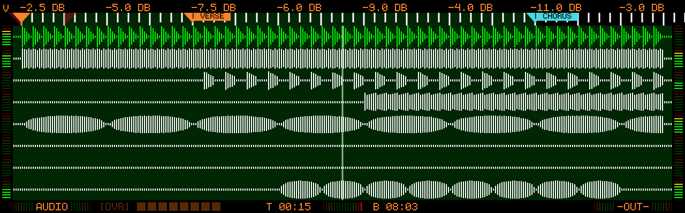
Welcome to the manual for the Thingstone Track8.
This manual is published for each stable firmware release.
📦 Latest firmware and release notes: Track8 Releases
🚀 Quick Links
- Getting Started
- Hardware Overview
- User Interface
- Audio Overview
- MIDI Overview
- Effects & Mastering
- Troubleshooting
💡 Found a mistake?
If you find missing or outdated information, please open an issue: 👉 Report a documentation issue
🎛 Philosophy
Track8 is designed to be:
- Immediate
- Hands-on
- Discoverable
- Distraction-free
Most operations are intentionally accessible without deep menu diving.
Hardware Overview
Front Plate
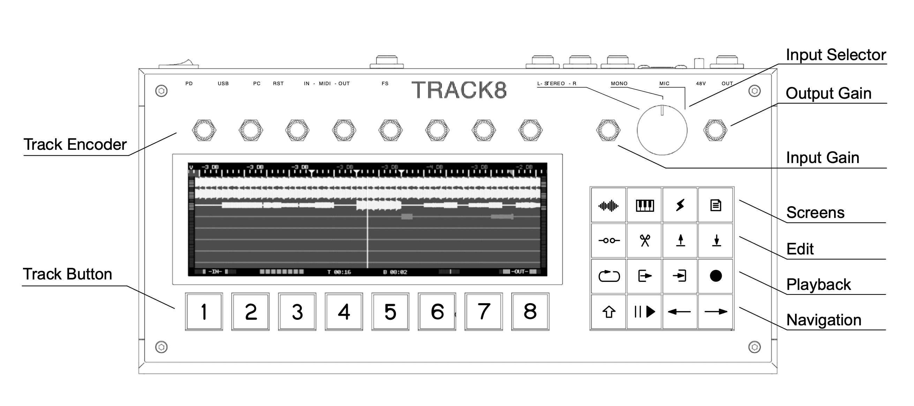
Dimensions
340mm x 170mm x 60mm 1.5kg
Audio Path
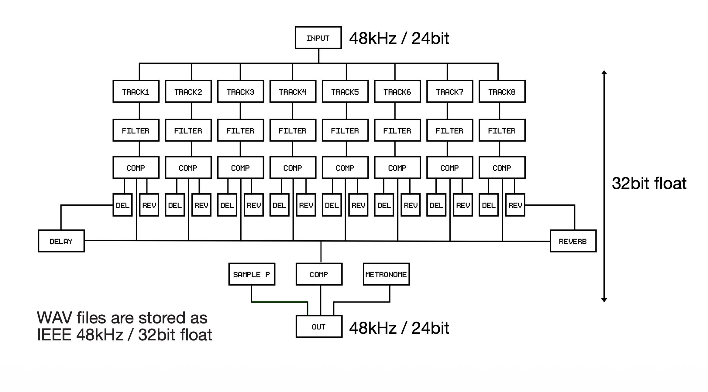
- Audio Converter work at 24bit/48kHz
- Internal Signal path is entirely float32
- WAV files are stored as IEEE 48kHz / 32 bit float
Connections
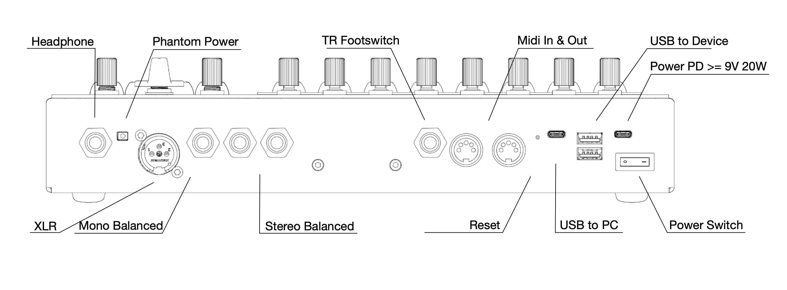
Inputs/Outputs
- Headphone (6.3mm Stereo phone jack)
- XLR balanced (with optional Phantom Power)
- Mono balanced (6.3mm TRS Mono phone jack)
- Stereo balanced (2x6.3mm TRS Mono phone jacks)
- Midi In/Out (DIN)
- Footswitch (6.3mm TS Mono phone jack)
- 2xUSB-A for Storage and Midi and class-compliant audio Devices
- USB-C for PC Connection
- USB-C for Power Delivery Power
Power Supply
- USB-C Power Delivery 9V >= 2.22A / 20W
- Power Draw: 15W max + USB Accessories
Precautions
Location:
Using this device in direct sunlight, extreme heat or humidity, excessive dust or dirt, excessive vibrations, close to magnetic or electromagnetic fields can cause malfunctions.
Power Supply
Connect the AC adapter only to an AC outlet of the correct voltage. Do not connect the Device to an inappropriate AC adapter.
Handling
Do not apply excessive force to switches or controls.
Care
If the exterior becomes dirty, wipe it with a clean, dry cloth. Do not use liquid cleaners.
Disposal
Do not discard this product along with ordinary household waste.
Getting Started
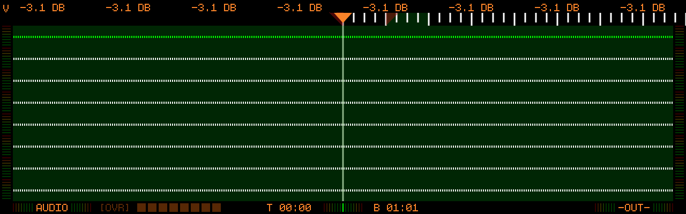
1. Power & Connections
- Connect USB-C power supply (PD, 9V, ≥20W)
- Connect headphones or speakers
- Connect instrument or microphone
- Enable 48V only for condenser microphones
2. Select Input
- Select the Input source with the 3-Way switch
- Play your instrument
- Adjust Input Gain
- Avoid clipping (red)
3. Arm Track
- Select track (1–8)
- Press Arm Record
- The track is now ready to record
- A red border around the screen shows that record is armed (new in v1.2.1-SNAPSHOT)
4. Record
- Press Play
- Recording starts immediately at the playhead
- While recording, the red screen border turns solid (new in v1.2.1-SNAPSHOT)
- Press Play again to stop
5. Playback
- Press Play
- Adjust Track Volume with the Track Encoder
6. Save / Export
- Press Settings (no SHIFT needed since v1.1.3)
- Use BROWSE to open the Project Browser and rename your project
- Or use EXPORT to export a Mix to a USB stick
Next, learn the interaction model on the User Interface page — or look up any control in the Controls & Shortcuts Reference.
User Interface
Track8 follows a simple and consistent interaction model. This page explains the core concepts — for the exhaustive, per-screen list of every control see the Controls & Shortcuts Reference.
Core Principles
🎛 Track Encoders
- Control the parameters shown at the top of the screen
- Press an encoder to switch its parameter mode
- A
^symbol marks encoders that have a secondary push function (since v1.1.3) - Hold SHIFT while turning for fine-grained steps (since v1.1.4)
- Hold SHIFT while pressing to switch encoder modes without the mode overlay interruption (since v1.1.2)
- Hold an encoder for 2 seconds to open MIDI Learn — see MIDI Remote Control (since v1.1.4)
🔘 Track Buttons
- Select tracks
- Trigger the actions shown at the bottom of the screen
- Shift = alternate function (e.g. SHIFT + Track Button = mute)
⇧ Shift Button
- Enables secondary actions
- Context-dependent
🎯 Visual Feedback
- Active elements = bright
- Inactive = dimmed
- A red border around the screen edges means record is armed (faded) or a take is rolling (solid). It is visible on every screen (new in v1.2.1-SNAPSHOT)
- While a take is rolling, actions that would break the recording (changing BPM, switching the record domain, opening heavy screens) are refused with an on-screen error instead of silently stopping the take (new in v1.2.1-SNAPSHOT)
- The status bar at the bottom of the Overview screens shows the active
recording mode, the overdub state and the current time/beat position.
Bars and beats are counted from 1, so the start of the tape reads
01:01(changed in v1.2.1-SNAPSHOT — it used to read00:01):
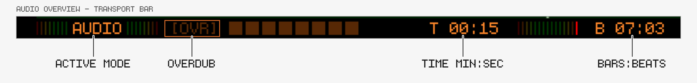
👆 Touch
- Screens that accept touch input show a small
[TOUCH]indicator (new in v1.2.1-SNAPSHOT) - A USB mouse scroll wheel or a jog wheel behaves like the SCROLL encoder in the Audio/MIDI Overview and Edit views (since v1.1.1)
Buttons and Shortcuts
Screens
-

-

-

-
-


-
-
-
Screen Button Cycles
Pressing a screen button again while already on its screen cycles through a family of related views:
- Audio → Audio Overview ↔ Track Mixer (new in v1.2.1-SNAPSHOT)
- Settings → Settings ↔ Utility (new in v1.2.1-SNAPSHOT) — the classic route via the UTILITY track button still works
- Master FX → Master FX → Mastering → External Inputs (External Inputs only with an external soundcard) (new in v1.2.1-SNAPSHOT)
- SHIFT + Master FX → Track FX ↔ Track Sends (Track Sends only with an external soundcard) (new in v1.2.1-SNAPSHOT)
Hold Shortcuts
- Hold Audio + Track Button — solo/unsolo an audio track on the Audio Overview (since v1.1.2)
- Hold Midi + Track Button — solo/unsolo a MIDI track on the Midi Overview (since v1.1.2)
- Hold Audio + Midi, then press a Track Button — select the same track for both Audio and MIDI (since v1.1.3)
- Hold Settings, then press Audio — open the Soundcard settings
- Hold Settings, then press Midi — open the MIDI settings
- Hold Loop + Cut/Copy — cut/copy based on the current loop region instead of marker bounds (new in v1.2.1-SNAPSHOT)
- Press Loop In + Loop Out together — set the loop region to the surrounding marker bounds; with SHIFT the punch region (since v1.2.0)
Edit
-

-

-

-

-
-
-
-
-
After a paste the playhead can jump to the end of the pasted region to chain
pastes into a repeating pattern — enable PASTE JMP in Utility
(since v1.2.0). Pasted/modified areas can be highlighted in orange via
MOD HI in Utility (since v1.1.4).
Playback Control
-

-

-

-

-
-
-
-
-
Undo during a take: SHIFT + Record stops playback, undoes the take and moves the playhead back to where recording started (new in v1.2.1-SNAPSHOT)
-
Redo: hold SHIFT and push Encoder 8 — one redo step after an undo, separate for Audio and MIDI (since v1.1.2)
Navigation
-
-
-
-
-
SHIFT PLAYin Utility (since v1.1.5) -
SHIFT NAVin Utility) -
SHIFT NAVin Utility)
The Left/Right buttons also navigate the tape while on the Track FX, Master FX and Mastering screens (new in v1.2.1-SNAPSHOT).
For every control on every screen, see the Controls & Shortcuts Reference.
Controls & Shortcuts Reference
This page is generated from the firmware source (the per-screen control description tables) and lists what every hardware control does on each screen.
Turn and Push are the two encoder actions. “Shift + …” applies while SHIFT is held or latched. A dash (—) means the control has no separate function in that state.
Global controls
These button functions apply on every screen. Screens that reassign a button list the change in their own section below.
| Button | Action | Shift + Button |
|---|---|---|
| Audio | Audio | Audio Edit |
| MIDI | MIDI | MIDI Edit |
| Master FX | Master FX | Track FX |
| Settings | Settings | USB Browser |
| Play | Play/Pause | Jump to start |
| Record | Record | Undo |
| Loop / Loop In / Loop Out | Toggle Loop, set In / Out, hold [ + ] to set from marker bounds, hold Loop + Cut/Copy to use loop region | Toggle Punch, set In / Out, hold [ + ] to set from marker bounds |
| Cut Point | Create Marker | Clear Markers |
| Cut / Copy / Paste | Cut, Copy, Paste selected Track | Cut, Copy all unmuted Tracks. Paste to bounce |
| Shift | Shift | — |
| Left | Jump Left | Beat Left |
| Right | Jump Right | Beat Right |
Audio Overview
Encoders with Shift held
| Encoder | Turn | Push |
|---|---|---|
| Encoder 1 | Push: Volume | — |
| Encoder 2 | Push: Pan | — |
| Encoder 3 | Push: Scroll | — |
| Encoder 4 | Push: Rec Offset | — |
| Encoder 5 | Push: Return Mix | — |
| Encoder 6 | Push: Return Vol | — |
| Encoder 7 | Push: Varispeed | — |
| Encoder 8 | Push: Redo | — |
Track buttons: all track buttons — SELECT TRACK
Track buttons with Shift held: all track buttons — MUTE TRACK
Buttons that work differently on this screen
| Button | Action | Shift + Button |
|---|---|---|
| Audio | Cycle Audio Overview / Track Mixer | Audio Edit |
| Record | Record | Undo (both domains after an AUDIO + MIDI edit) |
| Cut / Copy / Paste | Cut, Copy, Paste selected Track. Hold AUDIO + MIDI for Audio and MIDI together | Cut, Copy all unmuted Tracks. Paste to bounce |
Audio Overview — Volume
Encoders
| Encoder | Turn | Push |
|---|---|---|
| All encoders | Change the Volume for each track | Push → Pan |
Audio Overview — Pan
Encoders
| Encoder | Turn | Push |
|---|---|---|
| All encoders | Change the Pan for each track | Push → Scroll |
Audio Overview — Scroll
Encoders
| Encoder | Turn | Push |
|---|---|---|
| Encoder 1 | Change the increments of the Scroll movements | Push → Record Offset |
| Encoder 8 | Turn to scroll | Push → Record Offset |
Audio Overview — Record Offset
Encoders
| Encoder | Turn | Push |
|---|---|---|
| All encoders | Set the record offset per track | Push → Varispeed |
Audio Overview — Return Mix
Encoders
| Encoder | Turn | Push |
|---|---|---|
| All encoders | Change the mix of the return signal | — |
Audio Overview — Return Level
Encoders
| Encoder | Turn | Push |
|---|---|---|
| All encoders | Adjust the return level for each track | — |
Audio Overview — Varispeed
Encoders
| Encoder | Turn | Push |
|---|---|---|
| Encoder 6 | Change Percent / Semitones | Push → Volume |
| Encoder 7 | Enable / Disable Varispeed | Push → Volume |
| Encoder 8 | Change Amount, positive = faster, negative = slower | Push → Volume |
Track Mixer
Encoders
| Encoder | Turn | Push |
|---|---|---|
| All encoders | Adjust Track | Push → Next Parameter |
Track buttons: all track buttons — Mute Track. Hold Audio button → Solo
Buttons that work differently on this screen
| Button | Action | Shift + Button |
|---|---|---|
| Audio | Cycle Audio Overview / Track Mixer | Audio Edit |
| Record | Record Automation | Abort Take (while recording) |
| Cut / Copy / Paste | Copy, Cut, Paste all Mixer values. Cut resets to default | — |
Audio Edit
Track buttons
| Track button | Action |
|---|---|
| 7 | Fine grained edits |
Audio Edit — Volume
Encoders
| Encoder | Turn | Push |
|---|---|---|
| Encoder 1 | Selected Track | — |
| Encoder 2 | Increment Size | Push to switch Grid / ms |
| Encoder 4 | Current Volume at Playhead | Turn to write automation at playhead |
| Encoder 7 | Zoom factor | 0.25x to 2048x |
Track buttons with Shift held
| Track button | Action |
|---|---|
| 1 | Clear automation between markers |
| 7 | Fine grained edits |
No labelled function on this screen: Record, Loop / Loop In / Loop Out, Cut Point, Cut / Copy / Paste.
Audio Edit — Pan
Encoders
| Encoder | Turn | Push |
|---|---|---|
| Encoder 1 | Selected Track | — |
| Encoder 2 | Increment Size | Push to switch Grid / ms |
| Encoder 4 | Current Pan at Playhead | Turn to write automation at playhead |
| Encoder 7 | Zoom factor | 0.25x to 2048x |
Track buttons with Shift held
| Track button | Action |
|---|---|
| 2 | Clear automation between markers |
| 7 | Fine grained edits |
No labelled function on this screen: Record, Loop / Loop In / Loop Out, Cut Point, Cut / Copy / Paste.
Audio Edit — Track FX
Encoders
| Encoder | Turn | Push |
|---|---|---|
| Encoder 1 | Selected Track | — |
| Encoder 2 | Increment Size | Push to switch Grid / ms |
| Encoder 4 | Current FX Value at Playhead | Turn to write automation at playhead |
| Encoder 6 | Select TrackFX parameter | — |
| Encoder 7 | Zoom factor | 0.25x to 2048x |
Track buttons with Shift held
| Track button | Action |
|---|---|
| 3 | Clear automation between markers |
| 7 | Fine grained edits |
No labelled function on this screen: Record, Loop / Loop In / Loop Out, Cut Point, Cut / Copy / Paste.
Audio Edit — Return
Encoders
| Encoder | Turn | Push |
|---|---|---|
| Encoder 1 | Selected Track | — |
| Encoder 2 | Increment Size | Push to switch Grid / ms |
| Encoder 4 | Current Value at Playhead | Turn to write automation at playhead |
| Encoder 6 | Select Return Mix/Volume parameter | — |
| Encoder 7 | Zoom factor | 0.25x to 2048x |
Track buttons with Shift held
| Track button | Action |
|---|---|
| 4 | Clear automation between markers |
| 7 | Fine grained edits |
No labelled function on this screen: Record, Loop / Loop In / Loop Out, Cut Point, Cut / Copy / Paste.
Audio Edit — Edit
Encoders
| Encoder | Turn | Push |
|---|---|---|
| Encoder 1 | Selected Track | — |
| Encoder 2 | Increment Size | Push to switch Grid / ms |
| Encoder 4 | Slide Edit Region | — |
| Encoder 5 | Start Edit Region | — |
| Encoder 6 | End Edit Region | — |
| Encoder 7 | Zoom factor | 0.25x to 2048x |
Buttons that work differently on this screen
| Button | Action | Shift + Button |
|---|---|---|
| Cut / Copy / Paste | Edit Selection | — |
No labelled function on this screen: Record, Loop / Loop In / Loop Out, Cut Point.
Audio Edit — Nudge
Encoders
| Encoder | Turn | Push |
|---|---|---|
| Encoder 1 | Selected Track | — |
| Encoder 2 | Increment Size | Push to switch Grid / ms |
| Encoder 4 | Nudge Region | Push to confirm |
| Encoder 5 | Start Nudge Region | — |
| Encoder 6 | End Nudge Region | — |
| Encoder 7 | Zoom factor | 0.25x to 2048x |
No labelled function on this screen: Record, Loop / Loop In / Loop Out, Cut Point, Cut / Copy / Paste.
Audio Clipboard Modifier
Track buttons
| Track button | Action |
|---|---|
| 1 | Volume Group |
| 2 | Time Group |
| 3 | Reverse Group |
| 4 | Crush Group |
| 5 | Crop Group |
| 8 | Apply |
Track buttons with Shift held
| Track button | Action |
|---|---|
| 1 | Volume Group |
| 2 | Time Group |
| 3 | Reverse Group |
| 4 | Crush Group |
| 5 | Crop Group |
| 8 | Write Back |
Buttons that work differently on this screen
| Button | Action | Shift + Button |
|---|---|---|
| Loop / Loop In / Loop Out | Toggle Loop, set loop In / Out to playhead | — |
No labelled function on this screen: Record, Cut Point, Cut / Copy / Paste.
Audio Clipboard Modifier — Volume group
Encoders
| Encoder | Turn | Push |
|---|---|---|
| Encoder 1 | Grid | Push to toggle Grid / ms |
| Encoder 2 | Start | Push to set to playhead |
| Encoder 3 | End | Push to set to playhead |
| Encoder 4 | Volume | — |
| Encoder 7 | Zoom factor | 0.25x to 2048x |
| Encoder 8 | Scroll | — |
Audio Clipboard Modifier — Time group
Encoders
| Encoder | Turn | Push |
|---|---|---|
| Encoder 1 | Grid | Push to toggle Grid / ms |
| Encoder 2 | Start | Push to set to playhead |
| Encoder 3 | End | Push to set to playhead |
| Encoder 4 | Time | — |
| Encoder 7 | Zoom factor | 0.25x to 2048x |
| Encoder 8 | Scroll | — |
Audio Clipboard Modifier — Reverse group
Encoders
| Encoder | Turn | Push |
|---|---|---|
| Encoder 1 | Grid | Push to toggle Grid / ms |
| Encoder 2 | Start | Push to set to playhead |
| Encoder 3 | End | Push to set to playhead |
| Encoder 4 | Reverse | — |
| Encoder 7 | Zoom factor | 0.25x to 2048x |
| Encoder 8 | Scroll | — |
Audio Clipboard Modifier — Crush group
Encoders
| Encoder | Turn | Push |
|---|---|---|
| Encoder 1 | Grid | Push to toggle Grid / ms |
| Encoder 2 | Start | Push to set to playhead |
| Encoder 3 | End | Push to set to playhead |
| Encoder 4 | Crush | — |
| Encoder 7 | Zoom factor | 0.25x to 2048x |
| Encoder 8 | Scroll | — |
Audio Clipboard Modifier — Crop group
Encoders
| Encoder | Turn | Push |
|---|---|---|
| Encoder 1 | Grid | Push to toggle Grid / ms |
| Encoder 2 | Start | Push to set to playhead |
| Encoder 3 | End | Push to set to playhead |
| Encoder 4 | Slide | — |
| Encoder 7 | Zoom factor | 0.25x to 2048x |
| Encoder 8 | Scroll | — |
MIDI Overview
Encoders with Shift held
| Encoder | Turn | Push |
|---|---|---|
| Encoder 1 | Push: Channel | — |
| Encoder 2 | Push: Offset | — |
| Encoder 3 | Push: Scroll | — |
| Encoder 4 | Push: Rec Offset | — |
| Encoder 6 | Push: Quantize | — |
| Encoder 7 | Push: Varispeed | — |
| Encoder 8 | Push: Redo | — |
Track buttons: all track buttons — SELECT TRACK
Track buttons with Shift held: all track buttons — MUTE TRACK
Buttons that work differently on this screen
| Button | Action | Shift + Button |
|---|---|---|
| Record | Record | Undo (both domains after an AUDIO + MIDI edit) |
| Cut / Copy / Paste | Cut, Copy, Paste selected Track. Hold AUDIO + MIDI for Audio and MIDI together | Cut, Copy all unmuted Tracks. Paste to bounce |
MIDI Overview — Channel
Encoders
| Encoder | Turn | Push |
|---|---|---|
| All encoders | Change the MIDI Channel for each track | Push → Offset mode |
MIDI Overview — Offset
Encoders
| Encoder | Turn | Push |
|---|---|---|
| All encoders | Change the Track Offset for each track | Push → Scroll |
MIDI Overview — Scroll
Encoders
| Encoder | Turn | Push |
|---|---|---|
| Encoder 1 | Change the increments of the Scroll movements | Push → Rec Offset |
| Encoder 8 | Turn to scroll | Push → Rec Offset |
MIDI Overview — Rec Offset
Encoders
| Encoder | Turn | Push |
|---|---|---|
| All encoders | Set the MIDI record offset per track | Push → Quantize |
MIDI Overview — Quantize
Encoders
| Encoder | Turn | Push |
|---|---|---|
| Encoder 6 | Change the quantize grid | Push → Triplets on/off |
| Encoder 7 | Enable / Disable record quantize | Push → Varispeed |
| Encoder 8 | Change the quantize strength | Push → Varispeed |
MIDI Overview — Varispeed
Encoders
| Encoder | Turn | Push |
|---|---|---|
| Encoder 6 | Change Percent / Semitones | Push → Channel |
| Encoder 7 | Enable / Disable Varispeed | Push → Channel |
| Encoder 8 | Change Amount, positive = faster, negative = slower | Push → Channel |
MIDI Edit
MIDI Edit — Note
Encoders
| Encoder | Turn | Push |
|---|---|---|
| Encoder 1 | Selected Track | — |
| Encoder 2 | Grid | Push to toggle triplets |
| Encoder 6 | Note cursor | Steps through the device profile’s rows when one is bound |
| Encoder 7 | Zoom | SHIFT + Push: chromatic piano / profile rows |
Track buttons
| Track button | Action |
|---|---|
| 5 | Enable Record for Add/Replace/Delete note |
| 7 | Toggle Snap Mode |
| 8 | Toggle Step Record |
No labelled function on this screen: Record, Loop / Loop In / Loop Out, Cut Point, Cut / Copy / Paste.
MIDI Edit — Edit
Encoders
| Encoder | Turn | Push |
|---|---|---|
| Encoder 1 | Selected Track | — |
| Encoder 2 | Grid | Push to toggle triplets |
| Encoder 3 | Edit selected Notes | Push to confirm |
Track buttons
| Track button | Action |
|---|---|
| 5 | Select Edit Action: Transpose, Quantize, Velocity, Nudge |
Buttons that work differently on this screen
| Button | Action | Shift + Button |
|---|---|---|
| Cut / Copy / Paste | Edit Selection | — |
No labelled function on this screen: Record, Loop / Loop In / Loop Out, Cut Point.
MIDI Edit — CC
Encoders
| Encoder | Turn | Push |
|---|---|---|
| Encoder 1 | Selected Track | — |
| Encoder 2 | Grid | Push to toggle triplets |
| Encoder 5 | Select CC | Push to cycle between CC/AT |
Track buttons with Shift held
| Track button | Action |
|---|---|
| 3 | Clear automation between markers |
No labelled function on this screen: Record, Loop / Loop In / Loop Out, Cut Point, Cut / Copy / Paste.
MIDI Edit — Pitch Bend
Encoders
| Encoder | Turn | Push |
|---|---|---|
| Encoder 1 | Selected Track | — |
| Encoder 2 | Grid | Push to toggle triplets |
| Encoder 4 | Draw on the Screen | — |
Track buttons with Shift held
| Track button | Action |
|---|---|
| 4 | Clear automation between markers |
Buttons that work differently on this screen
| Button | Action | Shift + Button |
|---|---|---|
| Cut / Copy / Paste | Edit Selection | — |
No labelled function on this screen: Record, Loop / Loop In / Loop Out, Cut Point.
Track FX
Encoders
| Encoder | Turn | Push |
|---|---|---|
| Encoder 1 | Select Filter Node (or touch a node) | Push toggle selected Node |
| Encoder 2 | Filter Node Parameters (or drag node: Freq / Gain) | Push to cycle |
| Encoder 3 | Attack/Sidechain | Push to cycle |
| Encoder 7 | Delay Send | — |
| Encoder 8 | Reverb Send | — |
Track buttons
| Track button | Action |
|---|---|
| 1 | Toggle Filter On/Off |
| 2 | Node Filter Type |
| 3 | Toggle Compressor On/Off |
| 6 | Ratio |
| 7 | Toggle Send |
Track buttons with Shift held: all track buttons — Quick select Track
Buttons that work differently on this screen
| Button | Action | Shift + Button |
|---|---|---|
| Cut / Copy / Paste | Copy, Cut, Paste Track FX. Cut resets to default | — |
No labelled function on this screen: Record, Loop / Loop In / Loop Out, Cut Point.
Master FX
Encoders
| Encoder | Turn | Push |
|---|---|---|
| Encoder 1 | Delay Time | Push to toggle between ms and note values |
| Encoder 2 | Feedback, Width, Mod Rate, Mod Depth | Push to cycle |
| Encoder 3 | Reverb Size | — |
| Encoder 4 | Width, Damp, Predelay | Push to toggle |
| Encoder 5 | Compressor Values | — |
Track buttons
| Track button | Action |
|---|---|
| 1 | Toggle Delay |
| 2 | Toggle PingPong |
| 3 | Toggle Reverb |
| 4 | Select Algorithm |
| 5 | Toggle Compressor |
| 8 | Ratio |
Buttons that work differently on this screen
| Button | Action | Shift + Button |
|---|---|---|
| Master FX | Cycle Master FX / Mastering / External views | Track FX |
| Cut / Copy / Paste | Copy, Cut, Paste Master FX. Cut resets to default | — |
No labelled function on this screen: Record, Loop / Loop In / Loop Out, Cut Point.
Master FX 2
Encoders
| Encoder | Turn | Push |
|---|---|---|
| Encoder 3 | Drive and Thickness | Push to cycle |
| Encoder 4 | Gain and Frequency | Push to cycle |
| Encoder 5 | Gain and Frequency | Push to cycle |
| Encoder 6 | Gain and Crossover Freq | Push to cycle |
| Encoder 7 | High and Low Gain | Push to cycle |
| Encoder 8 | Output Gain and Brickwall Limiter | Push to access Limiter control |
Track buttons
| Track button | Action |
|---|---|
| 1 | Bypass Mastering |
| 2 | Highpass Filter |
| 3 | Tape Drive |
| 4 | Low/High EQ |
| 6 | High Frequency Compressor |
| 7 | Stereo Enhancer |
| 8 | Toggle Limiter |
Buttons that work differently on this screen
| Button | Action | Shift + Button |
|---|---|---|
| Master FX | Cycle Master FX / Mastering / External views | Track FX |
| Cut / Copy / Paste | Copy, Cut, Paste Mastering. Cut resets to default | — |
No labelled function on this screen: Record, Loop / Loop In / Loop Out, Cut Point.
External Channels
Encoders
| Encoder | Turn | Push |
|---|---|---|
| All encoders | Adjust External Input | Push → Next Parameter |
Track buttons: all track buttons — Mute External Input
Buttons that work differently on this screen
| Button | Action | Shift + Button |
|---|---|---|
| Master FX | Cycle Master FX / Mastering / External views | Track FX |
| Cut / Copy / Paste | Copy, Cut, Paste all Channel values. Cut resets to default | — |
Sample Browser
Encoders
| Encoder | Turn | Push |
|---|---|---|
| Encoder 1 | Select Midi Channel | For playback |
| Encoder 4 | Press to Delete | Hold SHIFT |
Track buttons
| Track button | Action |
|---|---|
| 1 | Exit folder |
| 4 | Paste audio from clipboard |
| 5 | Paste Midi from clipboard |
| 8 | Play selected File |
The transport, edit, navigation and screen-select buttons have no labelled function on this screen.
Project Browser
Track buttons
| Track button | Action |
|---|---|
| 2 | Backup to USB Stick |
| 3 | Import Backup from USB Stick |
| 4 | Save As, SHIFT: save settings as Template |
| 5 | Rename project / template |
| 6 | Hold SHIFT to delete |
| 7 | New project, Encoder 1 picks a Template |
| 8 | Load, on a Template: new project FROM TMP |
The transport, edit, navigation and screen-select buttons have no labelled function on this screen.
Export
No labelled function on this screen: Record, Loop / Loop In / Loop Out, Cut Point, Cut / Copy / Paste.
Export — Destination: USB
Encoders
| Encoder | Turn | Push |
|---|---|---|
| Encoder 3 | Export Destination | USB Stick or Bounce to a Track |
| Encoder 5 | Realtime Export with External Soundcard | — |
| Encoder 6 | Stem = All Track Files / MIX = Stereo Mix | — |
Export — Destination: Track
Encoders
| Encoder | Turn | Push |
|---|---|---|
| Encoder 3 | Export Destination | USB Stick or Bounce to a Track |
| Encoder 5 | Insert Point at Destination Track | — |
Settings
Track buttons
| Track button | Action |
|---|---|
| 1 | Tap Tempo |
| 2 | Global Settings |
| 6 | Name your Tracks |
| 7 | Switch Projects |
| 8 | Export audio to USB or Bounce to a Track |
No labelled function on this screen: Record, Loop / Loop In / Loop Out, Cut Point, Cut / Copy / Paste.
Settings — Whole-number BPM
Encoders
| Encoder | Turn | Push |
|---|---|---|
| Encoder 1 | BPM. Hold SHIFT for steps of 10 | Push to switch between whole BPM and decimals |
| Encoder 2 | Measure | Push to cycle |
| Encoder 6 | Recording Mode | Audio AND Midi / Audio OR Midi |
| Encoder 7 | Change what the 1/4“ Footswitch does | — |
| Encoder 8 | Audio Mon / Midi Mon | Push to cycle. OFF / ON / PUNCH (monitor only inside the punch brackets). Audio: disable when using Speakers and a Microphone. Midi: controls input echo to Midi Out |
Encoders with Shift held
| Encoder | Turn | Push |
|---|---|---|
| Encoder 1 | BPM in steps of 10 | Push to switch between whole BPM and decimals |
| Encoder 2 | Measure | Push to cycle |
| Encoder 6 | Recording Mode | Audio AND Midi / Audio OR Midi |
| Encoder 7 | Change what the 1/4“ Footswitch does | — |
| Encoder 8 | Audio Mon / Midi Mon | Push to cycle. OFF / ON / PUNCH (monitor only inside the punch brackets). Audio: disable when using Speakers and a Microphone. Midi: controls input echo to Midi Out |
Settings — Decimal BPM
Encoders
| Encoder | Turn | Push |
|---|---|---|
| Encoder 1 | BPM in steps of 0.01. Hold SHIFT for steps of 0.1 | Push to switch between whole BPM and decimals |
| Encoder 2 | Measure | Push to cycle |
| Encoder 6 | Recording Mode | Audio AND Midi / Audio OR Midi |
| Encoder 7 | Change what the 1/4“ Footswitch does | — |
| Encoder 8 | Audio Mon / Midi Mon | Push to cycle. OFF / ON / PUNCH (monitor only inside the punch brackets). Audio: disable when using Speakers and a Microphone. Midi: controls input echo to Midi Out |
Encoders with Shift held
| Encoder | Turn | Push |
|---|---|---|
| Encoder 1 | BPM in steps of 0.1 | Push to switch between whole BPM and decimals |
| Encoder 2 | Measure | Push to cycle |
| Encoder 6 | Recording Mode | Audio AND Midi / Audio OR Midi |
| Encoder 7 | Change what the 1/4“ Footswitch does | — |
| Encoder 8 | Audio Mon / Midi Mon | Push to cycle. OFF / ON / PUNCH (monitor only inside the punch brackets). Audio: disable when using Speakers and a Microphone. Midi: controls input echo to Midi Out |
Utilities
Encoders
| Encoder | Turn | Push |
|---|---|---|
| Encoder 1 | Change Navigation | When pressing Shift + ← → |
| Encoder 2 | Show Overlay | when Shift is held |
| Encoder 5 | Create new Project at Startup | — |
| Encoder 6 | Visual/Playhead utility toggles | — |
| Encoder 8 | Brightness and Standby | — |
Track buttons
| Track button | Action |
|---|---|
| 1 | Exit to Project Settings |
The transport, edit, navigation and screen-select buttons have no labelled function on this screen.
Tuner
Encoders
| Encoder | Turn | Push |
|---|---|---|
| Encoder 1 | Change Footswitch behavior | When set to Tuner |
Track buttons
| Track button | Action |
|---|---|
| 1 | Exit to Global Settings |
The transport, edit, navigation and screen-select buttons have no labelled function on this screen.
Threshold Recording
Encoders
| Encoder | Turn | Push |
|---|---|---|
| Encoder 1 | Also applies to Midi | — |
| Encoder 8 | Autopause Behavior | Can be set to pause on Grid |
Track buttons
| Track button | Action |
|---|---|
| 1 | Exit to Global Settings |
The transport, edit, navigation and screen-select buttons have no labelled function on this screen.
MIDI Settings
Track buttons
| Track button | Action |
|---|---|
| 1 | Exit to Global Settings |
| 8 | Name your MIDI Channels |
The transport, edit, navigation and screen-select buttons have no labelled function on this screen.
Tape Utility
Track buttons
| Track button | Action |
|---|---|
| 1 | Exit to Global Settings |
| 8 | Truncate Tape to reclaim Disk Space |
The transport, edit, navigation and screen-select buttons have no labelled function on this screen.
Audio Settings
Encoders
| Encoder | Turn | Push |
|---|---|---|
| Encoder 1 | Select a Soundcard | Must be class-compliant |
| Encoder 3 | Multi allows to record more than 1 Track at a time | — |
| Encoder 6 | Fallback to 44.1k | Degrades audio |
| Encoder 7 | Some Interfaces might need a higher Buffer | — |
Track buttons
| Track button | Action |
|---|---|
| 1 | Exit to Project Settings |
The transport, edit, navigation and screen-select buttons have no labelled function on this screen.
Screens not listed here (project save/rename/import dialogs, audio I/O mapping pages, MIDI mapping pages, firmware update) use the standard controls shown on screen.
Icons Overview
Combo Icon - PLUS sign – always use half width of regular icons:
<picture><source media="(prefers-color-scheme: dark)" srcset="icons/individual/track8_shift-dark.svg"><img alt="shift" src="icons/individual/track8_shift-light.svg" width="30"></picture>
<picture><source media="(prefers-color-scheme: dark)" srcset="icons/individual/track8_plus-dark.svg"><img alt="shift" src="icons/individual/track8_plus-light.svg" width="15"></picture>
<picture><source media="(prefers-color-scheme: dark)" srcset="icons/individual/track8_audio-overview-dark.svg"><img alt="audio-overview" src="icons/individual/track8_audio-overview-light.svg" width="30"></picture>


Responsive Icons (Light/Dark Mode Support)
-
Combo plus icon / use HALF-WIDH!:
plus -
Audio Overview:
audio-overview -
Midi Overview:
midi-overview -
Master FX:
master-fx -
Audio / MIDI Browser:
audio-midi-browser -
Set Marker:
set-marker -
Cut Area:
cut-area -
Copy Area:
copy-area -
Paste at Position:
paste-at-position -
Toggle Loop:
toggle-loop -
Set Punch In:
set-punch-in -
Set Punch Out:
set-punch-out -
Arm Record:
arm-record -
Shift:
shift -
Play / Pause:
play-pause -
Jump Left:
jump-left -
Jump Right:
jump-right -
Track Key 1:
track-key-1 -
Track Key 2:
track-key-2 -
Track Key 3:
track-key-3 -
Track Key 4:
track-key-4 -
Track Key 5:
track-key-5 -
Track Key 6:
track-key-6 -
Track Key 7:
track-key-7 -
Track Key 8:
track-key-8
Encoders (1–8) (Light/Dark Mode Support)
-
encoder-1 -
encoder-2 -
encoder-3 -
encoder-4 -
encoder-5 -
encoder-6 -
encoder-7 -
encoder-8
Audio Overview
Overview
Track8 is built around a tape-style linear workflow with:
- 8 audio tracks
- destructive editing (with multiple undo and 1 redo step)
- real-time FX and automation
🖥 Audio Overview Screen

Controls
🎛 Track Encoders
- Press any encoder to cycle through the encoder modes:
- VOLUME → level (per track)
- PAN → stereo position (per track)
- SCROLL → timeline navigation (Encoder 1 sets the scroll increment, Encoder 8 scrolls)
- REC OFFSET → per-track record offset, 0 to -50 ms (since v1.1.4)
- RETURN MIX / RETURN VOL → return signal balance and level (external soundcards only)
- VARISPEED → tape speed (since v1.1.5)
- Hold
- Encoder 1 → Volume, 2 → Pan, 3 → Scroll, 4 → Rec Offset, 5 → Return Mix, 6 → Return Vol, 7 → Varispeed
- Hold
🔘 Track Buttons
- Select active track
Track Button→ Mute / UnmuteTrack Button→ Solo / Un-solo (since v1.1.2)- Solo tracks are rendered in orange, all other tracks in their muted state
- Solo ignores the Mute state; toggling any Mute exits solo mode
Track Button→ select the same track for both Audio and MIDI (since v1.1.3)
🖥 Related Screens
- Press
🎚 Varispeed (since v1.1.5)
Change the tape speed for playback and recording:
- Switch any encoder to VARISPEED mode (
- Encoder 6: switch the display between Percent and Semitones
- Encoder 7: enable / disable Varispeed (disabling resets the speed)
- Encoder 8: adjust the amount
- Percent: -100 % (half speed) to +100 % (double speed)
- Semitones: -12 ST to +12 ST
Limitations:
- Recording with Varispeed is limited to one track — it is disabled when an external audio interface has more than one track armed
- The speed can’t be changed while a recording is running
- Playback audio is degraded; recorded audio is resampled at a higher quality

🎙 Recording Modes (since v1.1.2)
Touch the stereo input meter to cycle between three recording modes:
AUDIO: Default. Records audio only, no automationA+A: Records audio and live automationATM: Records automation only, no audio
In A+A and ATM mode the overview draws automation lines for the currently selected encoder mode (Volume, Pan, Return Mix, Return Vol). While recording is running, turning a track’s encoder writes its moves into that track’s automation lane.
- In
ATMmode every track records — turning any track’s encoder writes into its lane, no track selection or arming needed; inA+Amode automation is only written for the tracks being recorded (new in v1.2.1-SNAPSHOT) - A recorded automation pass undoes as a single step, however many tracks and parameters were ridden (new in v1.2.1-SNAPSHOT)
- The Track Mixer can arm an automation pass directly: pressing
ATMautomatically (new in v1.2.1-SNAPSHOT)

Recording behavior:
- Recording keeps running when switching views (except Settings / USB Browser)
- A running recording is indicated by a red border around the screen edges; actions that would silently stop it show an error instead (new in v1.2.1-SNAPSHOT)
- Touch the overdub indicator to quickly toggle Overdub (since v1.1.4)
🎬 Multi-Take Recording (new in v1.2.1-SNAPSHOT, preview)
Record multiple takes of the same section and pick the best one:
Tip — rehearse the punch: set
AUDIO MON(orMIDI MON) toPUNCHin the Project Settings and the input is only audible while the playhead is inside the punch brackets — even with punch recording off. What you hear on a rehearsal pass is exactly what a recorded pass will sound like (new in v1.2.1-SNAPSHOT).
- Set a Punch In region (best inside a Loop region so the playhead cycles automatically)
- Start playback — each pass through the punch region records a take; the take row appears at the bottom
- Stop and press a
Track Buttonto audition a take (you can also switch takes during playback) - To commit, select the take and exit Punch (
- Pressing
Notes:
- Works for non-Overdub audio recordings only
- Up to 8 takes; take 9 overwrites take 1
Track Buttonstill mutes,Track Buttonstill solos during a take session

📊 Meters & Indicators
The level meters read peak in 8 bars of 6 dB each, counted from the red end of the scale. Quieter bars stay lit as the level rises, so the last lit bar is the reading. The per-track meters run bottom-to-top; the stereo -IN- and -OUT- meters run outwards from their label:
| Bar | Color | Lights from |
|---|---|---|
| 1 (red end) | 🔴 Red | -3 dBFS and above |
| 2 | 🟠 Orange | -3 to -9 dBFS |
| 3 | 🟡 Yellow | -9 to -15 dBFS |
| 4 | 🟢 Yellow-green | -15 to -21 dBFS |
| 5-8 (quiet end) | 🟢 Green | -21 to -48 dBFS |
Below -48 dBFS no bar lights.
Input Level
- Shows incoming signal of selected track
- ⚠️ Avoid red → clipping
- Touch to cycle the recording mode (see above)
Post FX Level
- Shows signal after:
- Filter
- Compressor
Output Level
- Final mix after Master FX
- ⚠️ This is your final headroom check
Clipboard Indicator
- Shows which track content was copied from
- Touch it to open the Audio Clipboard Modifier (since v1.1.3)
⏱ Timeline Indicators
- Time Position
- Beat Position
- Loop / Punch markers
- Streaming state
- SSD usage
Markers
- Markers can be given textual labels (e.g. “Verse”, “Chorus”)
- Markers snap to 1/4 notes — use the Audio Edit view for finer cut/copy/paste work (since v1.1.4)
- Touch marker to edit label
- In the marker edit screen you can:
- Lock / Unlock marker - Locked markers are shown with an
*and are protected from deletion with clear all Markers ( - Change BPM and Time Signature at the marker position (since v1.1.3)
- Applies to all content after the marker, or until the next marker with a tempo change
- Also affects existing MIDI notes, MIDI Clock and the Metronome
- Markers that change the tempo are always considered locked
- Send MIDI events to external gear when the playhead crosses the
marker (new in v1.2.1-SNAPSHOT):
- Encoder 4 picks what Encoders 5/6 edit:
-(no MIDI event — turning back to-clears it),TRANSorPROG. A marker sends one or the other — setting one clears the other TRANS— Encoder 5:---/START/STOP. Sends MIDI Start or Stop at the marker, e.g. to kick a drum machine’s pattern in at the chorus or stop an external sequencer for a breakdown. Only while Track8 is MIDI Clock Master; independent of theTRANSPORTsend setting. WithCLOCKon, the message is aligned to the next clock tick like Track8’s own transportPROG— Encoder 5: channel (CH 1…16, starts on the selected MIDI track’s channel), Encoder 6:PROG 1…128(turn below1→---removes the program change); push Encoder 6 to switch Encoder 6 toBANK 1…128(Bank Select MSB). One event per marker; use two markers for two devices or for a program change plus a transport command- Program changes are caught up: on play start, locate and loop wrap the latest program change at or before the playhead is re-sent per channel, so a synth is in the right patch when you start mid-song. Transport events fire only when the marker is actually crossed
- Markers with MIDI events show an
Mon the marker head
- Encoder 4 picks what Encoders 5/6 edit:
- Colour-code the marker with Encoder 7 (
COLOR) — turn to cycle through the regular marker colour plus red, yellow, green, cyan, blue, purple, pink and white; push to go back to the regular colour. TheCOLORlabel is drawn in the selected colour as a preview. The marker head, its label background and its marker leg all follow, which makes sections easy to tell apart when scrolling a long project (new in v1.2.1-SNAPSHOT)
- Lock / Unlock marker - Locked markers are shown with an
UTILITY→MKR LEGdraws a vertical line under each marker for easier visual reference (since v1.1.4)- Press
📦 Clipboard System
- Cut/Copy/Paste (
- Hold
- Only unmuted tracks are included in Cut/Copy All Operations (
- The Clipboard is kept in Memory, and will be cleared when shutting down the device
- Touch the clipboard indicator to open the Audio Clipboard Modifier and process the clipboard content
Arrange Audio and MIDI together
Hold 


- Both domains share the playhead and the Markers, so both use the same region
- Like
- Paste puts every copied track back on its own track — also when only a single track was copied. There is no bouncing here: the multi-track clipboard keeps its layout on both sides
- Paste replaces the destination on both sides for the length of the pasted audio: the audio is overwritten and the MIDI events in that span are cleared before the clipboard is written, so nothing of the old section bleeds into the new one
- Both clipboards are used, so the chord replaces whatever was in them
- The chord works on the Audio Overview and the MIDI Overview — it does the same thing from either side
- Keep the two buttons held to chain operations: Copy, move the playhead, Paste, all in one grip
- Each chord action confirms on screen:
Copy Audio + MIDI to Clipboard,Cut Audio + MIDI to Clipboard,Paste Audio + MIDI(new in v1.2.1-SNAPSHOT) - One Undo reverts both halves. After a chord Cut or Paste, a plain Undo (
Record) takes the audio and the MIDI side back, from either screen, and showsUNDO Audio + MIDI. Redo (- This holds as long as the chord edit is the newest thing on both sides. Edit one domain on its own afterwards and Undo stays per-domain: on that domain’s screen it reverts the newer edit first — the chord edit underneath is only covered up, not lost: undo that edit and the following Undo pairs both domains again. On the other screen it reverts that side’s half of the chord on its own, and from then on the two halves are undone and redone independently
The clipboard can hold 12 minutes of audio in total (since v1.2.1-SNAPSHOT). This has the following implications on the Workflow:
- At most 12 minutes of audio can be Cut/Copied
- If you Cut/Copy Multiple tracks, the sum can’t be greater than 12 minutes
- Cut/Copy 8 tracks → The area can be 1.5 minutes long
Workflow helpers:
UTILITY→PASTE JMP: when enabled, Paste moves the playhead to the end of the pasted region, so you can quickly fill the tape with a repeating pattern (since v1.2.0)UTILITY→MOD HI: highlights all modified (pasted/cut) areas in orange until the next clipboard operation or view switch (since v1.1.4)- Every Cut/Copy/Paste confirms with a short overlay, e.g.
COPY/Copy all tracks to ClipboardorPASTE/Paste to Track 3: Drums. For long operations the overlay stays up and locks the controls until the audio is safely written to disk, then lingers a moment as the same confirmation (new in v1.2.1-SNAPSHOT)
🚀 Undo / Redo
For Audio there is an Undo Stack of 12 minutes (since v1.2.1-SNAPSHOT).
- Every audio operation (record, cut, paste, nudge, automation edit) moves the previous audio on the Undo stack
- As the Stack is capped at 12 minutes, older Undo steps get discarded
- As the Undo Stack has the same size as the Cut/Copy Limit, you can always undo once
- Undo moves the playhead to the start of the undone region (new in v1.2.1-SNAPSHOT)
- Undo and Redo confirm what they touched with a short overlay, e.g.
UNDO Track 3: Drums,UNDO all tracks,REDO Automation(new in v1.2.1-SNAPSHOT) - In two low-memory situations the device frees history early — always with an on-screen message:
CLIPBOARD CLEAREDandUNDO HISTORY TRIMMED(new in v1.2.1-SNAPSHOT)
Redo was introduced in v1.1.2
- To Redo, hold
- You can Redo only once
🎧 Monitoring Behavior
- The input signal is always routed / monitored through the selected track
- The input signal will be effected by the selected tracks TrackFX (
- Monitoring can be disabled in the Project Settings
- for acoustic instruments for example
- when using microphones/speakers to avoid feedback
🎚 Gain Staging (Important)
Typical flow: Input Gain → Track Volume → Master FX → Mastering → Output
Best practice:
- Keep input clean (no clipping)
- Use Track Volume for balance
- Use Mastering for final loudness
Editing Audio
Track8 uses a destructive editing model:
- Edits are written directly to WAV files
- Undo is available
- No hidden clips or regions
Important
Unlike DAWs:
- No clips
- No non-destructive edits
- Everything modifies the underlying audio
👉 This is intentional (tape workflow)
🖥 Audio Edit (Volume / Pan)
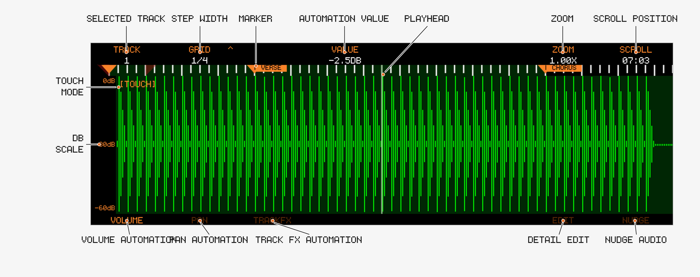
Open Audio Edit with 

Encoders
| Encoder | Function |
|---|---|
| 1 | Select Track |
| 2 | Scroll resolution — push to switch between Grid and ms steps |
| 4 | Value / automation at playhead (see below), SLIDE in Edit mode, Nudge in Nudge mode |
| 5 | Start of Edit/Nudge region — push to set Start to playhead (since v1.1.2) |
| 6 | End of Edit/Nudge region — push to set End to playhead. Selects the FX parameter in TrackFX/Return mode |
| 7 | Zoom (0.25x → 2048x) |
| 8 | Scroll timeline — push to move the Edit/Nudge region to the playhead |
Track Buttons
| Button | Mode |
|---|---|
| 1 | Volume automation |
| 2 | Pan automation |
| 3 | TrackFX automation (Filter, Compressor, Sends) |
| 4 | Return automation (external soundcards only) |
| 6 | CLIPMOD — open the Clipboard Modifier; with COPY > CLIP copies the selection and opens the Clipboard Modifier (since v1.1.5) |
| 7 | Edit — region editing |
| 8 | Nudge |
🎛 Automation
You can draw automation for:
- Volume
- Pan
- Track FX:
- Filter
- Compressor
- Sends
- Return Mix / Return Volume (external soundcards)
Behavior
- Automation is drawn via touchscreen (the
[TOUCH]indicator shows when a screen accepts touch input) - Automated Values are rendered green
- Multiple automation lanes can coexist
- Automation lanes can contain holes — cleared regions fall back to the track’s base value instead of interpolating across (new in v1.2.1-SNAPSHOT)
- Parameters that already have automation are marked with an
*in the TrackFX / Return parameter list, so they are easy to find (since v1.2.0)
Writing automation with Encoder 4 (since v1.1.2)
Encoder 4 shows the current value of the selected parameter at the playhead. Turning it writes an automation point there:
- Works live during playback — ride the encoder and the old points under the playhead are replaced as you go (new in v1.2.1-SNAPSHOT)
- Works while stopped — combine with
SCROLLto place individual values precisely - While an automation recording (
A+A/ATMmode) is running, encoder moves on the Overview and Track Mixer are recorded the same way
🧹 Clearing Automation
- Selectively delete automation points with
- Clear automation between the surrounding Markers with
- Volume:
- Pan:
- TrackFX:
- Return:
- Volume:
- With no markers set, the clear extends over the whole tape
- The cleared region becomes a hole: it reads the track’s base value
- Clears go on the undo stack like any other edit
✂️ Region Editing
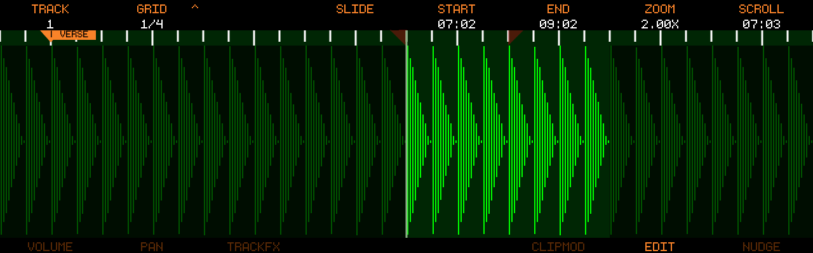
Region Editing (Track Button 7) allows for fine grained editing of a single Track. In this mode you are not bound to the Regions set by Markers.
Workflow
- Select start position (Encoder 5, or push Encoder 5 to grab the playhead)
- Select end position (Encoder 6, or push Encoder 6 to grab the playhead)
- Apply:
- Cut
- Copy
- Paste
Rules
- Paste always happens at playhead
- Cut and Copy Operations only affect selected region
- Hold
Helpers
SLIDE(Encoder 4): moves Start and End together inGRID/JUMPincrements, keeping the region length (new in v1.2.1-SNAPSHOT)LOOPis enabled (since v1.2.0)- Modification highlights (
UTILITY→MOD HI) are also shown in this view (since v1.1.5)
↔️ Nudge Editing
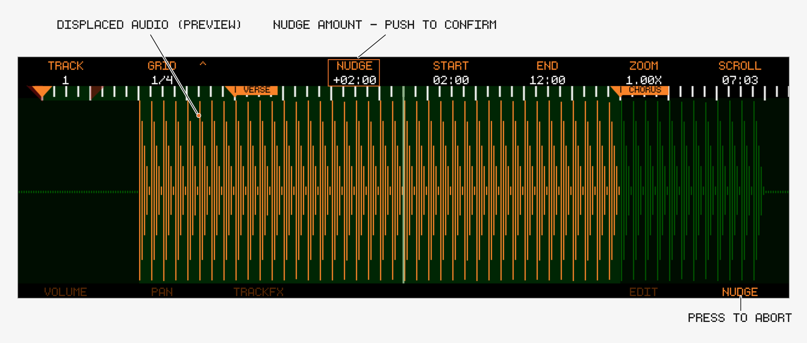
Nudge (Track Button 8) moves selected audio on the timeline. The changes can be pre listened without committing the edit to tape.
Behavior
- Select start/end position with Encoders 5/6
- Move the audio by turning Encoder 4
- Highlighted region = active nudge
- Pre listen the change by pressing play (It’s useful to create a loop region around that change, so you can listen to the change repeatedly)
- Confirm the change by pushing Encoder 4
- The Nudge region is limited to 4 minutes (since v1.2.1-SNAPSHOT)
Cancel
- Switch screen OR
- Press any mode Track Button
🚀 Undo
- See Audio Overview for the Undo/Redo stack details
Audio Clipboard Modifier
:clipboard: Audio Clipboard Modifier
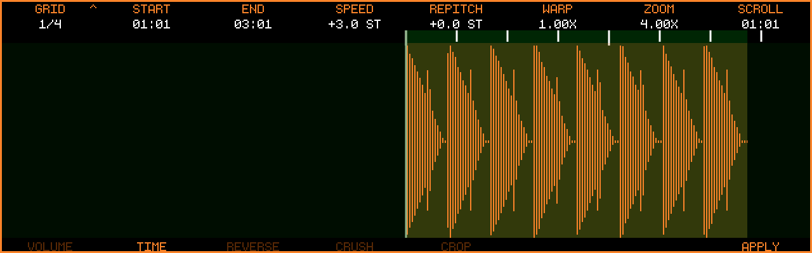
The Clipboard Modifier (introduced in v1.1.3) is a small self-contained editor that works on the audio clipboard instead of the tape. Copy audio, mangle it, audition it, then paste the result — the tape stays untouched until you paste.
The screen is marked with an orange border so it can’t be confused with the regular Audio Edit view.
Entering / Leaving
- Enter by touching the clipboard indicator on the Audio Overview or Audio Edit screen after a Cut/Copy
- Or from Audio Edit: Track Button 6
CLIPMODopens the modifier;COPY > CLIPcopies the current selection and opens the modifier in one step (since v1.1.5) - Multi-track clipboards open with all copied tracks included — every edit is applied to all of them
- Exit via any view button (e.g.
- The modifier remembers the group you last worked in and reopens there (new in v1.2.1-SNAPSHOT); all parameters start neutral on each visit
- It also remembers the encoder 1 resolution — the
GRIDdivision, orJUMPmode and its millisecond step — so switching to the overview or wave edit screen and back no longer resets it to1/4(new in v1.2.1-SNAPSHOT)
Important
Clipboard edits have no undo. If you don’t like a result, Copy the audio again for a fresh clipboard.
Navigation Encoders
| Encoder | Function |
|---|---|
| 1 | GRID — step size for Start/End/Scroll. Push to toggle JUMP mode (free millisecond steps instead of the musical grid) |
| 2 | START of the edit region — push to set Start to the playhead |
| 3 | END of the edit region — push to set End to the playhead |
| 4–6 | Parameters of the selected group (see below) |
| 7 | Zoom (0.25x → 2048x) |
| 8 | Scroll / move the playhead |
All edits apply to the region between START and END — by default the whole clipboard. Hold 
Groups (Track Buttons)
Track Buttons 1–5 select a group; each group puts its parameters on Encoders 4/5/6.
| Button | Group | Encoder 4 | Encoder 5 | Encoder 6 |
|---|---|---|---|---|
| 1 | VOLUME | VOLUME (-64 to +64 dB) | PAN (100L to 100R) | FADE (see below) |
| 2 | TIME | SPEED (±24 st, length + pitch change) | REPITCH (±24 st, pitch only) | WARP (0.5x to 2.0x, length only) |
| 3 | REVERSE | REVERSE (ON/OFF) | SHUFFLE (1–32 slices, push to re-roll the order) | STUTTER (1–64 repeats) |
| 4 | CRUSH | BIT (32 down to 1 bit) | SAMPLE (1x–32x rate reduction) | — |
| 5 | CROP (since v1.2.0) | SLIDE (move the whole Start/End region) | — | — |
| 8 | APPLY — commit the group’s settings to the clipboard | |||
| 8 + | WRITE BACK (since v1.1.5) |
Notes:
PAN: a balance on the clip’s existing stereo pair — panning right attenuates the left channel and leaves the right untouched (and vice versa). A clip recorded into one input only lives on one side, so panning it towards the silent side fades it out rather than moving it across.FADE: negative values = fade-in, positive = fade-out. Values up to ±100 use an equal-power curve; beyond ±100 the curve gets steeper, up to ±200 (since v1.2.0)SPEED/WARPrespect the 12-minute clipboard limit across all copied tracks combined — the encoder simply stops at the last value that still fits (new in v1.2.1-SNAPSHOT)- Automation copied along with the clip follows a length change: after an
APPLYthat resizes the clip (SPEED,WARP,CROP), pasting places the automation over the new length rather than the original one CROPneeds no parameters: setSTART/END(orSLIDEthe region), thenAPPLYto discard everything outside it (since v1.2.0)- Switching to another group (or re-pressing the current one) discards any un-applied settings of the current group
- On a multi-track clipboard,
APPLYshows its progress per track (“Track 3/8”) (new in v1.2.1-SNAPSHOT)
WRITE BACK (since v1.1.5)

- If the clipboard changed length (
SPEED/WARP), the write back overwrites more or less than the original region - Only available when the current group has no un-applied changes —
APPLYfirst - The write back is a normal paste on the tape, so it can be undone with
UNDO
Audition
GRID/JUMPstep- Press
START/ENDregion (new in v1.2.1-SNAPSHOT) - Tape playback is silenced while the modifier is open; it resumes when you leave the screen
MIDI Overview
Track8 treats MIDI similarly to audio:
- Linear timeline (linked to the audio timeline)
- Per-track editing with Cut/Copy/Paste
- Real-time + step recording (see MIDI Edit)
🖥 MIDI Overview

Track Behavior
Track8 aims to make MIDI routing as simple as possible. Instead of listing all connected MIDI devices Track8 introduces a Track to MIDI Channel mapping.
- Each track = one MIDI output channel
- MIDI input → always routed to active track
- It does not matter on which MIDI Channel incoming notes/CCs are
- Channel Information of incoming MIDI signals is discarded and always routed to the selected Track
Devices flagged as control surface in
UTILITY→MIDI→DEVICEare the exception: their CCs drive MIDI Remote Control instead of being recorded (since v1.1.4).
🎛 Encoders
Press any encoder to cycle through six encoder modes:
CHANNEL → OFFSET → SCROLL → REC OFFSET → QUANTIZE → VARISPEED
Or jump directly with 
CHANNEL, 2 = OFFSET, 3 = SCROLL, 4 = REC OFFSET, 6 = QUANTIZE, 7 = VARISPEED.
CHANNEL
- Sets the MIDI output channel (1–16) per track
- Channels already used by another track are skipped
- Playback stops while changing channels
OFFSET
- Per-track MIDI timing offset, -100ms to +100ms
- Use
SCROLL
- Encoder 8 scrolls the timeline, Encoder 1 changes the scroll increment
- A mouse scroll wheel (USB) also scrolls the timeline (since v1.1.1)
REC OFFSET (new in v1.2.1-SNAPSHOT)
- Per-track MIDI record offset, 0 to -50 ms — the MIDI counterpart of the audio REC OFFSET
- Recorded notes and CCs are stored this much earlier than they arrive. Use it when your takes land late on the grid: what you hear while recording (metronome, tracks) reaches your monitors after the audio output latency, so notes played in time with it arrive that much late
- Start with roughly your audio buffer latency and adjust by ear; it applies to live recording only (not step record)
- Turn left to increase (shifts earlier), like the audio REC OFFSET
QUANTIZE (new in v1.2.1-SNAPSHOT)
Record quantize: while enabled, incoming MIDI notes are snapped to the grid as they are recorded.
- Encoder 6: quantize grid,
1/4to1/64— push to toggle triplets (e.g.1/16T), like the grid encoder in MIDI Edit - Encoder 7: enable/disable record quantize
- Encoder 8: strength,
0%to100%—100%puts notes exactly on the grid, lower values move them only part of the way, keeping some of the human feel - The note start is quantized to the nearest grid line; the note keeps exactly the length you played
- Applies to notes as they are stored, on all further takes until switched off — already recorded notes are untouched (quantize those with the
EDITtool in MIDI Edit) - Step recording is unaffected: it always snaps to the step grid
- The setting is saved with the project
VARISPEED (since v1.1.5)
- Encoder 6: display in Percent or Semitones
- Encoder 7: enable/disable Varispeed
- Encoder 8: amount — positive = faster, negative = slower (-100% = half speed, +100% = double speed, or ±12 semitones)
- Recording with Varispeed is limited to one track, and the amount cannot be changed while a recording is running
- Playback audio is degraded; recorded audio is resampled at a higher quality

🔘 Track Buttons
- Press a Track Button to select the active track
Track Button→ Mute / Unmute- Hold
Track Button→ Solo / Un-solo (since v1.1.2) - Hold
Track Button→ select the same track for Audio and MIDI (since v1.1.3)
Solo behavior
- Solo ignores the Mute state of the track
- Soloed tracks are rendered in the highlight color (orange in the default theme), all other tracks in their muted color
- Toggling any Mute (
Track Button) exits solo mode
📊 Indicators
Input Activity
- Shows incoming MIDI channel
Output Activity
- Shows outgoing MIDI activity
Clipboard
- Same behavior as audio
- The indicator highlights the origin Track of the clipboard content
- Cut/Copy always adheres to the regions defined by Markers
- Paste always goes to the Playhead position on the selected track and — like audio — replaces what is there for the length of the clipboard (notes, controllers, pitchbend, aftertouch); it does not merge onto existing events (since v1.2.1-SNAPSHOT, before that Paste merged)
- Each chord action confirms on screen:
Copy Audio + MIDI to Clipboard,Cut Audio + MIDI to Clipboard,Paste Audio + MIDI(new in v1.2.1-SNAPSHOT) - After such a chord Cut/Paste,
Recordundoes the MIDI and the audio half in one press (UNDO Audio + MIDI), and
🚀 Undo / Redo
MIDI has its own Undo stack, separate from audio.
Record→ Undo the last MIDI operation- Both confirm what they touched with a short overlay, e.g.
UNDO Track 2: BassorREDO all tracks(new in v1.2.1-SNAPSHOT)
🔁 Loop & Punch
- Same concept as audio workflow
- Applies to MIDI recording
Threshold Recording via MIDI (since v1.1.3)
Incoming MIDI notes can trigger threshold recording. For this you have to be in one of the MIDI views, or A && M recording has to be enabled in the Project Settings.
🎧 MIDI Monitor (new in v1.2.1-SNAPSHOT)
Incoming MIDI is echoed to the output channel of the selected track. This can now be switched off independently of the audio monitor:
- In the Project Settings, push Encoder 8 to cycle between
AUDIO MONandMIDI MON, then turn to setOFF/ON/PUNCH PUNCHechoes input only while the playhead is inside the punch brackets — whether or not punch recording is armed — so a rehearsal pass sounds exactly like the recorded result (new in v1.2.1-SNAPSHOT)- Defaults to
ON - Note-off messages always pass, so no notes get stuck
🕰 MIDI Sync
Clock and MTC sync are configured in UTILITY → MIDI (see Utility):
SYNC MODE:CLOCKorMTCSYNC ROLE:MASTERorSLAVE- Clock mode: send/receive SPP, Transport and Clock individually
- MTC mode: frame rate (24/25/29.97/30 fps) and, as slave, an MTC offset
Clock sync has been hardened over several releases (tighter DIN clock since v1.1.1, larger averaging and outlier detection for slave sync, further MIDI scheduling and jitter improvements new in v1.2.1-SNAPSHOT).
The DEVICE, CONTROL and CH NAMES buttons on this screen configure MIDI Remote Control, channel names and MIDI Device Profiles (per-channel note/CC names for drum machines and synths, since v1.2.1-SNAPSHOT).
Editing MIDI
🖥 MIDI Edit (Notes)
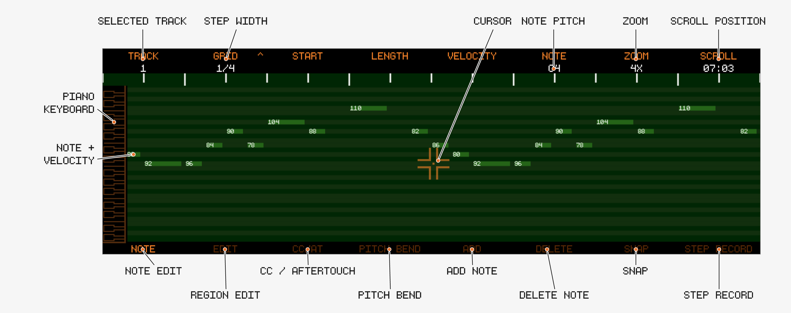
The MIDI Edit screen has four sub-views, selected with the first four Track Buttons:
| Track Button | Sub-view |
|---|---|
| 1 | Note — select and edit single notes |
| 2 | Edit — region tools: Transpose, Quantize, Velocity, Nudge |
| 3 | CC/AT — draw CC and Channel Aftertouch automation |
| 4 | Pitch bend — draw Pitch Bend automation |
Controls shared by all sub-views:
- Encoder 1: selected track
- Encoder 2:
GRIDresolution — push to toggle triplets (new in v1.2.1-SNAPSHOT) - Encoder 7: zoom —
- Encoder 8: scroll along the timeline
Left/Right: nudge the playhead by grid steps,Left/Right: jump between markersPlay: jump to the edit region start; playback stops at the region end unlessLOOPis enabled (since v1.2.0)- Push Encoder 4 / Encoder 5 in the
Editview sets the edit region start/end at the playhead (since v1.1.2)
🎹 Note Editing
Profile piano roll (since v1.2.1-SNAPSHOT)
If the track’s MIDI channel has a MIDI Device Profile
with named notes, the piano on the left is replaced by those names — one row
per drum sound, expanded to fill the screen for up to 15 rows (more rows keep a readable height and scroll around the cursor).
Notes with data that are not in the profile still get a row (labelled with the note name). The
note cursor (Encoder 6) steps from row to row; SNAP is off in this view.
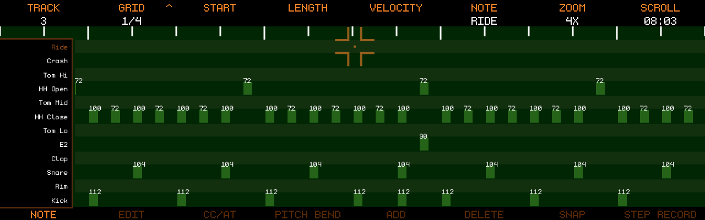
Editable Parameters
- Start (Encoder 3)
- Length (Encoder 4)
- Velocity (Encoder 5)
- Pitch / Note (Encoder 6)
Workflow
- Select a note (move the cursor onto it with Encoder 6 / Encoder 8)
- Press encoder (3–6) to enter edit mode
- Edit the value
- Press again to confirm
Unconfirmed edits are discarded when leaving the screen. Hold 
Note colors (since v1.1.2)
The selected note is displayed bright, all other notes in the muted color. This makes velocity values easier to read and clearly shows which note is selected.
Add / Replace / Delete
With Record enabled (press Record):
Track 5→ Add a note at the playhead (or Replace the selected note); length = grid sizeTrack 6→ Delete the selected note
🧲 SNAP Modes (since v1.1.2)
Track 7 cycles the cursor snap mode in the Note view: SNAP (off) → HARM SNAP → TRKR SNAP.
TRKR SNAP
- Behaves like a tracker: all notes are ordered by timestamp and from high to low
- Scrolling (Encoder 8) traverses all notes in the viewport
- If there are no notes in the desired direction, scrolling falls back to
GRIDjumps
HARM SNAP
- A harmony-aware snap algorithm
- Scrolling (Encoder 8) finds the closest note, preferring the time axis but also moving in pitch if a closer note exists
- The
NOTEencoder (Encoder 6) snaps to the closest note in the pitch axis - Both directions fall back to
GRIDif no notes are found
Snap also affects mouse-wheel scrolling, and is disabled while playback is running.
⏱ Grid System
- Controls timing resolution (down to 1/64)
- Push Encoder 2 (
GRID) to toggle triplet subdivisions, e.g.1/8→1/8T(new in v1.2.1-SNAPSHOT) - Affects:
- Step recording
- Quantize / Nudge step size
- Playhead nudging and note start/length steps
➕ Step Recording
- Toggle with
Track 8(also arms record) - Played notes are added at the playhead, which advances automatically
- Note length = grid size
- While holding keys, press
Right/Leftto extend/shrink the note by grid steps
🛠 MIDI Tools (Edit view)
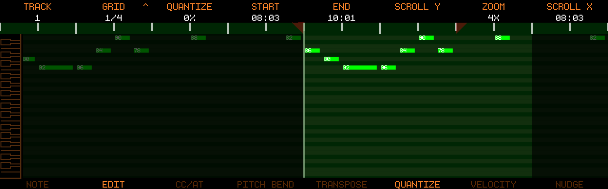
Work on the edit region, then confirm:
- Encoder 4 / Encoder 5: set region start/end (push = set at playhead, since v1.1.2)
- Push Encoder 8: move the whole region to the playhead
- Encoder 3: adjust the selected tool’s amount — push Encoder 3 to apply
- Cut/Copy in this view uses the edit region instead of marker bounds
Select the tool with Track Buttons 5–8:
Transpose (Track 5)
- Shift notes in semitones (±127)
Quantize (Track 6, overhauled in v1.2.1-SNAPSHOT)
- Snaps notes to the grid, adjustable strength in 5% steps
- Turning past 100% switches to forward-only quantize; turning below 0% switches to backward-only quantize (new in v1.2.1-SNAPSHOT)
Quantize,SwingandHumanize- Swing (±50%) and Humanize (0–100%) add groove/timing variation
Velocity (Track 7)
- Scales note velocity (±100%), fine steps with
Nudge (Track 8)
- Moves notes by grid steps
🎛 CC / Aftertouch Editing
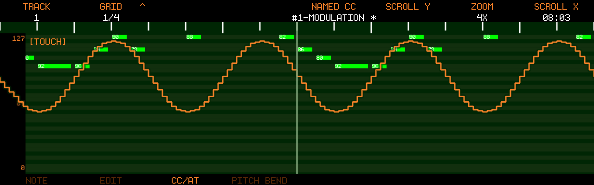
Behavior
- Draw via touchscreen, range 0–127
- Encoder 5 selects the CC; push Encoder 5 to cycle the CC list mode:
- Named CCs (standard controllers — or the device’s own list when the track’s channel has a MIDI Device Profile with controllers, since v1.2.1-SNAPSHOT)
- Free CCs (all numbered controllers not in the named list)
- AFTERTOUCH — Channel Aftertouch recording and editing (since v1.1.3)
- Parameters that already contain data are marked with
*(since v1.2.0)
Special Cases
- Pedal CCs → ON/OFF only (0/127)
- Pitch Bend → separate lane (
Track 4)
Clearing
Track 3→ Clear the selected CC (or Aftertouch)Track 4→ Clear Pitch Bend- Clearing respects Marker positions: only the region between the surrounding markers is cleared, same as audio automations (new in v1.2.1-SNAPSHOT)
MIDI Device Profiles
(since v1.2.1-SNAPSHOT)
A device profile tells Track8 what an external MIDI device understands: which notes trigger which drum sound, and which CCs it listens to. Bind a profile to a MIDI channel and every track sent to that channel gets:
- a profile piano roll in MIDI Edit — one labelled row per named note
(
Kick,Snare,HH Close…) instead of the chromatic piano, rows expanded to fill the screen when only a few notes are configured - a CC selector that lists the device’s controllers, in the profile’s order and with the profile’s names
Profiles are bound per MIDI channel, globally — a synth on channel 5 is
the same synth in every project. Binding lives in UTILITY → MIDI →
CH NAMES, next to the channel names.
Binding a profile to a channel
UTILITY → MIDI → CH NAMES:
- Encoder 1 highlights a channel row
- Encoder 8 cycles the profile for that channel:
---(none) and every profile file found on the SSD; push clears the binding - A bound channel shows the profile’s name (in the automation colour); a custom channel name (touch the row) still wins for display
The folder is rescanned every time you open CH NAMES, so a file you just
copied over USB shows up immediately.
Profile files
Profiles are JSON files in midi_profiles/ on the Track8 SSD (next to
projects/). Edit them on a computer in USB-disk mode. On first start
Track8 creates the folder with a few examples to copy from: GM Drums,
TR-909, TR-808, Generic Synth.
{
"version": 1,
"name": "Tempest",
"notes": {
"36": "Kick",
"38": "Snare",
"42": "HH Close",
"46": "HH Open"
},
"controllers": [
{ "cc": 74, "name": "Cutoff" },
{ "cc": 71, "name": "Reso" },
{ "cc": 1, "name": "Mod" }
]
}
name— shown on the device (max 16 characters). Empty → the file name.notes— note number (0–127) → label (max 10 characters). Only these notes get a row in the profile piano roll. Leave empty for a melodic device.controllers— the CC list of the Named selector, in this order, with these names (max 10 characters). Leave empty to keep the standard list.- The file name (without
.json) is what the channel binding remembers — rename the file and the binding showsname ?until you re-bind it. - A file that does not parse is ignored (and logged); it never breaks the others.
In MIDI Edit
Note view (profile with notes):
- The piano keys on the left are replaced by the note names; rows that are
not in the profile but carry data on this track still get a row, labelled
with the note name (
E2), so nothing becomes unreachable. Encoder 6(note cursor) steps from row to row; moving or adding a note works the same way — a note can only sit on a row.- Up to 15 rows (named notes plus any notes with data) → rows grow (up to 3× the chromatic row) and the block is centred; with more rows the labels would become unreadable, so the rows keep their readable height and scroll around the cursor instead (like the chromatic piano).
SHIFT+ pushEncoder 7(zoom) toggles back to the chromatic piano (and back again) for the session — e.g. to play a melodic part on a drum channel.SNAPhelpers (TRKR / HARM) are off while the profile rows are shown.
CC/AT view (profile with controllers):
- Named CCs = the profile’s list; Free CCs = every other CC, so a CC the profile hides is still reachable there.
Track Mixer
The Track Mixer (new in v1.2.1-SNAPSHOT) shows all 8 audio tracks as classic mixer strips — level meter, volume, pan and the delay/reverb sends side by side — so you can balance a whole mix from one screen.
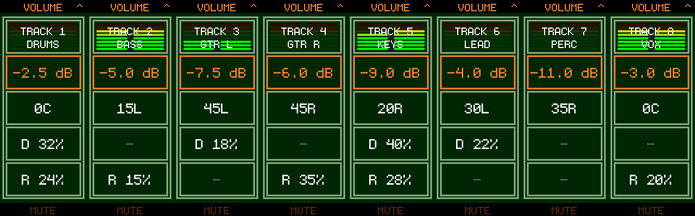
Opening the Mixer
- Press
Channel Strips
Each strip shows, top to bottom:
- Output level meter (stereo)
TRACK nand the track nameVOLUMEin dBPAND— Delay send in %R— Reverb send in %
The strip meter shows the track’s post-fader output on the same 6 dB-per-bar scale as the Audio Overview meters: red at the top is 0 dBFS, and a track pushed past 0 dBFS by its own volume holds the red bar lit.
Muted strips are dimmed — including tracks silenced because another track is soloed. On silent tracks the MUTE button label lights up at full contrast: it is the way back. While a solo is active the soloed track’s label reads SOLO instead.
Full Meter View
Touch the level meters to expand them into a full-height meter view (new in v1.2.1-SNAPSHOT):
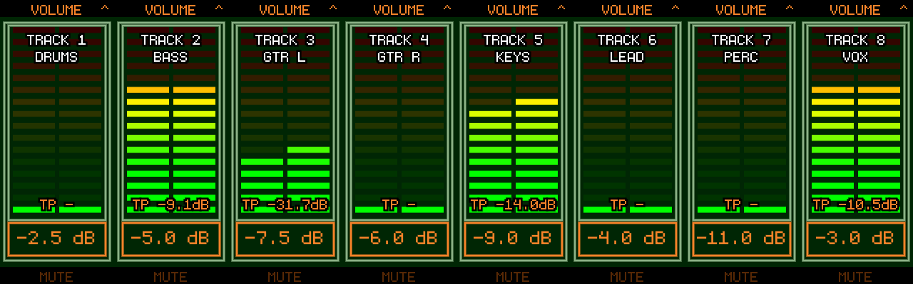
- The meters use the finer Mastering-screen scale — 16 bars from +12 dBFS down to −55 dBFS, about 4 dB per bar
TPat the bottom of each meter is the track’s True Peak (dBTP) over the last 3 seconds, the same measurement as theTP 3sreadout on the Mastering screen. It reads-while the track is silent. Ideal for gain staging — e.g. aim your input peaks at −12 dB- The box at the bottom shows each strip’s active parameter; the encoders keep working exactly as before (turn to adjust, push to cycle), as do mutes, solo, automation recording and Copy/Cut/Paste
Touch the meters again to return to the normal channel strips. The mixer remembers which view you left it in.
Controls
Encoders
- Encoder n adjusts the active parameter of strip n
- Push the encoder to cycle its strip’s parameter:
VOLUME→PAN→D(Delay send) →R(Reverb send) - Each strip remembers its own parameter — you can ride volume on one track and a send on another
- Hold
- Turning a send encoder switches that send on automatically so the change is audible immediately; switching a send off is done on the Track FX screen
Track Buttons
Track Buttonn toggles Mute for track n (noTrack Button→ Solo / Un-solo, the same gesture as on the Audio Overview (new in v1.2.1-SNAPSHOT)- Solo ignores the Mute states; while a solo is active, pressing any track button exits solo mode
Transport
Automation
- Press
ATM(automation only — recording from this screen never touches audio) and Record is armed; press Play and ride away (new in v1.2.1-SNAPSHOT) - In
ATMmode every track records: turning any strip’s encoder writes into its automation lane — no track selection or arming needed (new in v1.2.1-SNAPSHOT) - While an automation-recording pass is running (
ATM, orA+Astarted from the Audio Overview), the value flashes in the recording color while writing - A recorded automation pass undoes as a single step, no matter how many tracks and parameters you rode (in
A+Amode the audio take and the automation pass are separate undo steps) (new in v1.2.1-SNAPSHOT) - Values driven by an automation lane are rendered green and follow the playhead
- The
DandRsends record into their Track FX automation lanes - To edit the recorded curve afterwards, use
Copy / Cut / Paste Mixer Values
The edit keys work on the mixer itself here, not on the tape:
Only the mixer values are touched: automation lanes, mutes and the rest of each track’s FX chain are left alone.
MIDI Remote Control
Mixer encoders support MIDI Learn: hold an encoder for 2 seconds to open the MIDI Learn modal and map an external controller to that strip’s parameters. See MIDI Remote Control.
MIDI Remote Control (since v1.1.4)
Track8’s encoders and most transport/edit buttons can be driven from an external MIDI controller — faders, knobs, buttons and jog wheels. Mappings are created either with MIDI Learn (hold an encoder) or manually in a mapping editor.
- Mappings are global: they survive project switches and reboots
- They are stored in a separate
midi.jsonfile next tomain.json, so they can be backed up and copied between devices - MIDI Remote Control is only available on the Track8 hardware (not in the Companion App)
🔌 Step 1: Flag your controller (DEVICE)
Go to UTILITY → MIDI → DEVICE.
- The list shows the built-in
DIN MIDI INplus every connected USB MIDI input - Scroll with Encoder 8, toggle the
CTRLflag with Track Button 8 (or push Encoder 8) EXIT(Track Button 1) returns to the MIDI settings
A device flagged CTRL becomes a control surface: its CCs drive your mappings and are no longer recorded into MIDI tracks. Devices you disconnect stay in the list greyed out, keeping their flag — they work again as soon as you plug them back in.

🎓 MIDI Learn (encoders)
On a supported screen, hold any encoder for 2 seconds to open the MIDI Learn modal:
- If the encoder has multiple functions (push states), select the function you want with Encoder 6
- Move a knob/fader on your controller — the captured source appears as e.g.
CC#74 ch 1(it takes two consecutive messages to register, so a single stray event won’t latch) CONFIRMwith Track Button 6, orCANCELwith Track Button 3
Supported screens:
- Audio Overview
- Track FX
- Track Mixer (new in v1.2.1-SNAPSHOT)
- Track Sends (new in v1.2.1-SNAPSHOT)
- Master FX
- Mastering
- External Channels
Notes on how encoder mappings behave:
- A full sweep of the CC (0–127) always covers the full parameter range
- A mapping only fires while its screen is open and its function mode is active — cycling the encoder to another mode does not silently retarget your knob
- Audio Overview encoders are per-track: a mapping on Encoder 3 always drives Track 3. Map all 8 encoders for a full fader bank
- Track FX and Track Sends mappings are locked to the track (and filter node) that was selected when you learned them
🗂 Managing mappings (CONTROL)
Go to UTILITY → MIDI → CONTROL to see all mappings, one row per mapping (source → screen / encoder / function).

- Encoder 8: scroll the list
ADD(Track Button 7): create a mapping manuallyEDIT(Track Button 8, or push Encoder 8): edit the highlighted mappingDELETE(Track Button 6): delete the highlighted mapping (with confirmation)EXIT(Track Button 1): back to the MIDI settings
The Add/Edit modal
| Control | Sets |
|---|---|
| Encoder 2 | CC number (0–127) |
| Encoder 3 | MIDI channel (1–16 or ANY) |
| Encoder 4 | Target screen |
| Encoder 5 | Target encoder (1–8) or button action |
| Encoder 6 | Function (only for encoders with multiple modes) |
| Encoder 7 | Mapping mode: ENC (encoder) or BTN (button) |
| Track Button 2 | CANCEL |
| Track Button 7 | SAVE / REPLACE |
While the modal is open, incoming CCs from your control surface auto-fill the CC number and channel — just wiggle the control you want to use.
🔘 Button mappings
Set Encoder 7 to BTN in the Add/Edit modal. Button mappings are momentary: the action fires once when the CC value rises to 64 or above, and re-arms when it falls below 64 — perfect for pads and momentary switches.
Global actions (work on every screen):
Play, Record, Left, Right, Shift Left / Shift Right (marker jump), Loop Tgl, Loop In, Loop Out, Punch Tgl, Set Marker, Cut, Copy, Paste
Audio Overview actions: Select / Mute / Solo / Arm for each of the 8 tracks
MIDI Overview actions: Select / Mute / Solo for each of the 8 tracks
🎡 Jog wheel scrolling
Map a jog wheel to the Scroll function (e.g. Audio Overview → Scroll). Scroll mappings use relative CC decoding instead of absolute positions, so an endless wheel works without end stops:
- Sign-magnitude encoding (e.g. Korg nanoKONTROL) is detected automatically
- Two’s-complement / Mackie-style encoding (e.g. Behringer X-Touch, most DIY jog wheels) is detected as well (improved detection new in v1.2.1-SNAPSHOT)
Set your controller’s encoder to a relative CC mode if it offers one.
⚠️ One CC, one function
Each CC can control exactly one function, and each function can be controlled by exactly one CC. If a mapping you learn or save would collide with an existing one — same CC source or same target — Track8 shows a warning listing what would be replaced, and the confirm button changes to REPLACE. Confirming removes the old mapping; cancelling keeps it.
Tip: since a channel setting of
ANYintercepts that CC on every channel, two mappings for the same CC number on different channels only work if neither is set toANY.
Effects & Mastering
Track8 uses a two-stage FX system:
- Per-track FX (Filter, Compressor, Sends)
- Global Master FX + Mastering (with brick-wall limiter)
🧭 Navigating the FX Screens
- The arrow keys are free in all FX screens — navigate the tape without leaving the screen (new in v1.2.1-SNAPSHOT)
📋 Copy / Cut / Paste FX values (new in v1.2.1-SNAPSHOT)
On every FX screen the edit keys work on the whole view’s values instead of tape audio:
Works on Track FX, Track Sends, Master FX, Mastering, External Inputs and the Mixer. Automation lanes are not touched — only the base values.
🎹 MIDI Learn
Hold any FX encoder for 2 seconds to map it to a MIDI CC — see MIDI Remote Control (since v1.1.4).
🎛 Track FX

- Access via
- The edited track is clearly labeled TRACK n at the top (since v1.1.3)
Track Button→ quick-select another track
Filter
- 4-node filter, per node choose a type with
Track Button 2:- Low Pass / High Pass / Band Pass / Notch / Low Shelf / High Shelf / Bell (Bell since v1.2.0)
Encoder 1selects a node, push toggles the node on/offEncoder 2adjusts the node parameter, push cycles FREQ → Q → GAIN (Gain only for Shelf/Bell types)Track Button 1toggles the whole filter on/off- Touch control (new in v1.2.1-SNAPSHOT): tap a node on the graph to select it, drag to set frequency (horizontal) and gain (vertical, Shelf/Bell types)
Compressor
- Per-track dynamics with sidechain input
Encoder 3: Attack — push to switch to sidechain source (select another track, or off)Encoder 4: Release,Encoder 5: Threshold,Encoder 6: Makeup gainTrack Button 3: on/off,Track Button 6: cycle Ratio- Gain-reduction ladder: green on top = no gain reduction, segments extend down into red as the compressor works
Sends
Encoder 7: Delay Send,Encoder 8: Reverb SendTrack Button 7/Track Button 8: toggle the sends on/off- Delay/Reverb sends are true sends — the send taps a copy of the signal, the dry track level is never attenuated (since v1.2.1-SNAPSHOT)
Track Sends (new in v1.2.1-SNAPSHOT)

With an external audio interface, each track gets 8 additional aux sends to hardware outputs:
- Press
Encoders 1-8set the send level for sends 1-8Track Buttons 1-8toggle each send on/off;Track Buttonselects the track- Sends are true post-fader sends, summed per bus across all tracks and routed straight to the output pairs configured under
SENDSin the Audio settings — see External Audio
Important Note
- Internal processing is 32-bit float
- Red ≠ clipping (only >1.0 signal)
👉 Real clipping happens at final output
🖥 Master FX

The global Delay and Reverb (fed by the track sends) plus a master bus compressor.
Delay
Encoder 1: Time — ms or beat-synced (push to toggle). Synced values are note lengths from1/1to1/64:1/4is a quarter note in every time signature (fixed in v1.2.1-SNAPSHOT)Encoder 2: Feedback / Width / Mod Rate / Mod Depth (push to cycle)Track Button 1: Delay on/off — off mutes the delay return; the track sends themselves are unaffected (since v1.2.1-SNAPSHOT, previously the sends passed through dry)Track Button 2: Ping-pong on/off
Delay LFO (chorus / flanger)
(since v1.2.1-SNAPSHOT)
The delay time can be modulated by an LFO — this turns the delay into a chorus or flanger:
- Mod Rate (0.1–10 Hz) — LFO speed
- Mod Depth (0–20 ms) — how far the delay time swings;
0 ms= LFO off (default) - Width — with modulation active, Width also sets the L/R phase offset of the LFO:
0%= both channels move together (mono chorus),100%= 180° apart (wide stereo). When Ping-pong is on, Width additionally controls the ping-pong spread as before. Shift + Encoder 2= fine steps
Recipes: Chorus — Time 15–30 ms, Feedback 0–20 %, Mod Rate 0.3–1 Hz, Mod Depth 2–5 ms. Flanger — Time 10 ms, Feedback 50–80 %, Mod Rate 0.1–0.5 Hz, Mod Depth 1–3 ms. The radar’s time arc wobbles to indicate rate and depth.
Reverb
Encoder 3: SizeEncoder 4: Width / Damp / Pre-delay (push to cycle; a Gate page appears for the Gated algorithm)Track Button 3: Reverb on/offTrack Button 4: cycle algorithm
Algorithms
- Hall
- Ambient
- Gated
- Modern
Compressor
Encoder 5: Attack,Encoder 6: Release,Encoder 7: Threshold,Encoder 8: Makeup gainTrack Button 5: on/off,Track Button 8: cycle Ratio
🎚 Mastering Section

Access: press 
Chain
- Input Gain (
Encoder 1) - High-pass filter (
Encoder 2,Track Button 2) - Tape Drive — Drive + Thickness (
Encoder 3, push to cycle;Track Button 3) - Low Shelf EQ — Gain + Frequency (
Encoder 4, push to cycle) - High Shelf EQ — Gain + Frequency (
Encoder 5, push to cycle) - HF Compressor — Threshold + Crossover (
Encoder 6, push to cycle;Track Button 6) - Stereo Enhancer — Width + Space (
Encoder 7, push to cycle;Track Button 7) - Output Gain (
Encoder 8) - Brick-wall Limiter (see below)
Track Button 1bypasses the whole Mastering sectionTrack Button 4toggles the Low/High EQ
🧱 Master Limiter (since v1.1.1)
A realtime (zero latency), brick-wall limiter at the very end of the signal chain:
- Push
Encoder 8to cycle OUTPUT → LIMIT → L-RELEASE Track Button 8toggles the limiter on/off — except on the L-RELEASE page, where it toggles AUTO releaseLIMIT: set the ceiling (-12 to 0 dBFS)L-RELEASE: set the release time (5-1000 ms)- While on LIMIT/L-RELEASE the screen shows:
- LUFS 3s — loudness of the last 3 seconds
- TP 3s — True Peak (dBTP) of the last 3 seconds
📈 Spectrum Analyzer (new in v1.2.1-SNAPSHOT)
The Mastering screen shows a realtime spectrum of the master output. It is fed post-limiter, so it always shows what actually leaves the device — even with Mastering bypassed.
Key Concept
- This is your final shaping stage
- Equivalent to a mastering chain — use the limiter as a safety ceiling and the LUFS/True Peak readout to judge your final level
External Audio (>=v1.1.0)
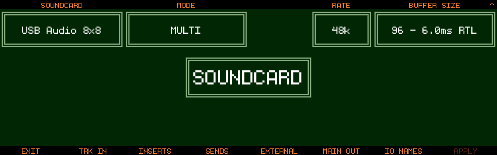
Overview
Track8 supports class-compliant USB audio interfaces for:
- Multitrack recording
- External FX routing (insert send/returns + 8 aux sends)
- Hybrid setups — mix external gear into the master chain
⚙️ Setup
Open SETTINGS → UTILITY → AUDIO:
SOUNDCARD(Encoder 1): select the interface (must be class-compliant)MODE(Encoder 3):MULTIrecords multiple tracks at once,SINGLEis the classic one-track workflowMON(Encoder 5): internal monitoring — routes the main mix to Track8’s own headphone output (useful for rack interfaces). LockedONfor input-only interfacesRATE(Encoder 6): 48k / 44.1k (since v1.1.1)BUFFER SIZE(Encoder 7/8): some interfaces need a higher buffer. Push the encoder to switch toPERIODS(3-5, default 3) if you get crackles at your preferred buffer size (new in v1.2.1-SNAPSHOT)Track Button 8(APPLY): apply changes and restart the audio engine
⚠️ 44.1kHz is a last resort (since v1.1.1). Track8 always runs at 48kHz internally — at RATE 44.1k all incoming/outgoing audio is resampled (in the worst case input/send/return/output resamples 4 times). This degrades audio quality and costs performance. Only use it if your interface cannot run at 48kHz.
🔁 Routing
Configure the channel mapping with the Track Buttons on the AUDIO settings screen:
TRK IN
- Assign an input pair per track (in
SINGLEmode: oneSINGLE INinput pair)
INSERTS (renamed from Send/Returns in v1.2.1-SNAPSHOT)
- Per-track insert send and insert return for external processing
- The insert send taps the track post volume/pan, pre track-FX
- The return is blended back in before the Track FX
SENDS (new in v1.2.1-SNAPSHOT)
- Map each of the 8 aux send buses to a hardware output pair
- One channel mapped = mono, both = stereo; channels can be set to
- - Send levels are set per track on the Track Sends screen — see Effects & Mastering
EXTERNAL
- Assign up to 8 external input pairs for mixing external gear (grooveboxes, synths, mixers)
MAIN OUT
- Choose the main output channel pair
- Channels can be set to
-to disable them, e.g. when using Track8 purely as a USB soundcard front-end (since v1.2.0) ALT METRON(Encoder 8, new in v1.2.1-SNAPSHOT): route the metronome to separate output channel(s). When set, the metronome is removed from the main mix and only sent there — perfect for a drummer’s cue mix. One channel = mono, both = stereo
IO NAMES
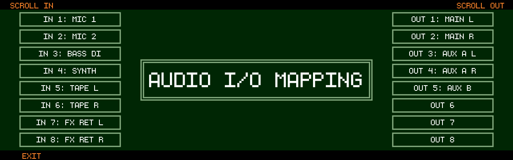
- Give your interface’s inputs/outputs readable names — they show up in all mapping screens
🎚 External Inputs Screen
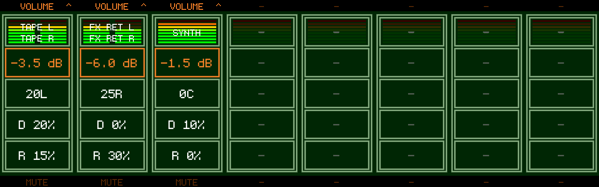
Press 
Encoders 1-8: adjust each channel — push to cycle VOLUME → PAN → DELAY SEND → REVERB SENDTrack Buttons 1-8: mute a channel- External inputs are mixed with the 8 tracks before Mastering and can feed the Master Delay/Reverb via their sends
- Copy/Cut/Paste works on all 8 channels’ values; Cut resets to defaults, Paste restores (mute states are excluded) (new in v1.2.1-SNAPSHOT)
🎧 Monitoring
- Internal Monitoring (
MON) routes the main mix to the built-in headphone output - Interfaces without outputs are supported (since v1.1.5) — internal monitoring is then always on, and the Inserts/Sends/Main Out pages are hidden
- If the USB interface disconnects, Track8 automatically falls back to the internal soundcard
⚙️ Modes
- Multi-track → record multiple tracks simultaneously
- Single-track → classic behavior, one configurable input pair
⚠️ Requirements
- Must support 48kHz (or use the
RATE44.1k fallback, see above) - Bus-powered: <5W
🎛 Multitrack Recording Behavior
- Arm tracks first:
- Hold
Track Button+ pressRecord - Only tracks with assigned inputs can be armed
- Hold
- Recording:
- All armed tracks start together
🎚 Return Mixing
For tracks with an insert return, the Audio Overview encoders gain two extra modes (push an encoder to cycle to them):
RETURN LEVEL→ level of the returned signal (-60 to 0 dB)RETURN MIX→ dry/return balance (0% = track only, 100% = return only)
Both are also available in SINGLE mode (fixed in v1.2.1-SNAPSHOT) and can be automated.
Settings & Projects
Press the Settings button to open the Settings screen (since v1.1.3 no SHIFT needed — SHIFT + Settings opens the USB Browser instead). Press Settings again to cycle to the Utility screen and back (new in v1.2.1-SNAPSHOT).
Shortcuts from the Settings screen:
- Hold Settings + press Audio — open the Soundcard settings
- Hold Settings + press Midi — open the MIDI settings
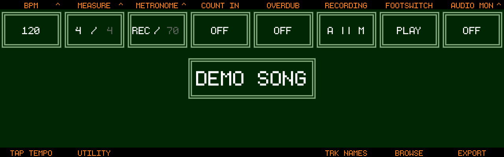
Project Settings
These settings are stored per project.
| Encoder | Setting | Values |
|---|---|---|
| 1 | BPM | 30–360. Push to switch between whole BPM and decimals (new in v1.2.1-SNAPSHOT). Whole mode: SHIFT = steps of 10. Decimal mode: steps of 0.01, SHIFT = 0.1 |
| 2 | MEASURE | Time signature. Push to cycle numerator (1–32) / denominator (1–64, powers of 2) |
| 3 | METRONOME | OFF / REC (only while recording) / ON. Push to switch to the metronome level. Beats follow the time signature’s denominator — in 7/8 it clicks every eighth with the accent on 1 (fixed in v1.2.1-SNAPSHOT) |
| 4 | COUNT IN | OFF or 1–16 beats, counted in the same beat as the metronome (7 beats = one bar of 7/8) |
| 5 | OVERDUB | ON / OFF |
| 6 | RECORDING | A && M records Audio and MIDI together, A || M records only the domain you are in |
| 7 | FOOTSWITCH | PLAY / RECORD / HOLD REC / TUNER / MARKER |
| 8 | AUDIO MON / MIDI MON | Push to cycle (MIDI MON new in v1.2.1-SNAPSHOT). OFF / ON / PUNCH — PUNCH monitors only while the playhead is inside the punch brackets, whether or not punch recording is armed, so you can rehearse a punch-in and hear exactly what the recorded result will sound like (new in v1.2.1-SNAPSHOT). Audio: switch OFF when using speakers and a microphone. MIDI: controls whether input is echoed to MIDI Out |
Track buttons:
- TAP TEMPO (Track 1) — tap at least twice to set the BPM
- UTILITY (Track 2) — open the Utility screen
- TRK NAMES (Track 6) — name your audio and MIDI tracks
- BROWSE (Track 7) — open the Project Browser (see below)
- EXPORT (Track 8) — export a mix or stems to USB, or bounce to a track (since v1.2.0)
Settings while recording
The Settings screen stays reachable during a take — that is how you toggle the metronome mid-pass. Controls that would break the recording (BPM, tap tempo, time signature, overdub, recording mode, and the doors to Utility / Track Names / Browse / Export) are refused with an on-screen error while a take is rolling (new in v1.2.1-SNAPSHOT).
Project Browser
Open with BROWSE (Track 7) on the Settings screen.
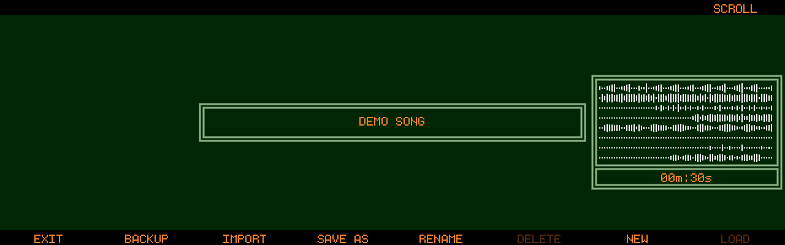
- Scroll projects with Encoder 8 — the selected project’s waveform loads as a preview. Projects are sorted alphanumerically (new in v1.2.1-SNAPSHOT)
- LOAD (Track 8 or push Encoder 8) — switch to the selected project
- BACKUP (Track 2) — back up the selected project to a USB stick
- IMPORT (Track 3) — import a backup from a USB stick
- SAVE AS (Track 4) — save the current project under a new name
- RENAME (Track 5) — rename the selected project
- SHIFT + Track 6 — delete the selected project (the active project cannot be deleted; a confirmation dialog appears)
- NEW (Track 7) — create a new project; Encoder 1 on the name
keyboard picks a template (
TEMPLATE: ---= empty project)
Project Templates
(since v1.2.1-SNAPSHOT)
A template is a project without content: it keeps the settings (BPM, time signature, metronome, record modes), track names and colours, MIDI channels, mixer levels / pans / mutes, Track FX, sends, Master FX and Mastering, external channel mapping and grid preferences — but no audio, MIDI, automation, markers, loop or punch. It also carries a setup: the audio interface configuration, MIDI sync settings, threshold record and tuner settings (channel names and device profiles stay as they are).
- Templates are listed at the bottom of the browser as
TEMPLATE: <name>(no waveform preview). With a template highlighted, LOAD turns into FROM TMP: enter a name for the new project (a random one is suggested) and it is created from the template - RENAME and
- The template’s setup is applied when the project is created. The active
audio interface itself is never switched automatically: if the template
was saved with a different interface, a hint asks you to select it in
UTILITY→AUDIO - Templates live in
templates/next toprojects/on the SSD
Projects load faster since v1.2.1-SNAPSHOT: the waveform overview is cached with the project. The first load of an older project (or after editing its files outside Track8) rebuilds the cache and may take a moment longer.
You can also let Track8 ask for a new project on every start — see the
AT STARTUP setting in Utility (since v1.1.4).
Naming Things
Whenever a name is needed (projects, tracks, markers, exports) the input keyboard opens:
- Tap SHIFT on the keyboard for one uppercase letter; double-tap for Caps Lock, single tap to exit it (since v1.1.3)
- Left / Right buttons move the text cursor; the Record button deletes the character at the cursor (new in v1.2.1-SNAPSHOT)
- When creating a new project, push Encoder 8 (dice) to generate a random project name (since v1.1.3)
- A standard USB keyboard can be used to type; only characters present on the touch keyboard are registered, and Enter confirms (new in v1.2.1-SNAPSHOT)
Utility
Global device settings that apply to every project. Open the Settings screen and press UTILITY (Track 2) — or simply press Settings twice (new in v1.2.1-SNAPSHOT). EXIT (Track 1) returns to Settings.
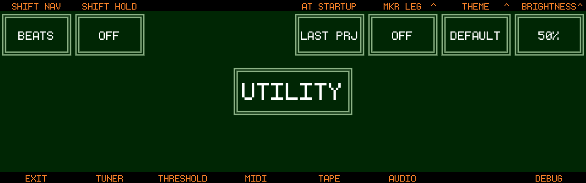
Settings
Encoders with a ^ symbol hold more than one setting — push to cycle.
| Encoder | Setting | Values |
|---|---|---|
| 1 | SHIFT NAV | MARKER / BEATS — what SHIFT + ← → does: jump between markers or by single beats |
| 2 | SHIFT HOLD | OFF / NAMES — show the track name overlay while SHIFT is held |
| 3 | TIMED JUMP | OFF / AT BEAT / AT BAR — with MARKER navigation, marker jumps during playback wait for the next beat/bar so you stay in time |
| 5 | AT STARTUP | LAST PRJ / NEW PRJ — with NEW PRJ, Track8 offers a fresh project (with a generated name) on every start (since v1.1.4) |
| 6 | Feature toggles (push to cycle) | see below |
| 7 | THEME / SHADER | Select a color theme (including a colorblind theme, since v1.1.3). Push for the SHADER (bloom) toggle |
| 8 | BRIGHTNESS / STANDBY | Screen brightness. Push for Standby: OFF / 1m / 5m / 15m / 30m / 60m of inactivity before the screen dims to a screensaver — only while playback is stopped; any key wakes it up (since v1.1.3) |
Create your own color themes with the theme editor: https://thingstone.com/theme-editor
Feature toggles (Encoder 6, push to cycle)
- MKR LEG — draw a vertical line under each marker for easy visual reference (since v1.1.4)
- MOD HI — highlight pasted/modified audio in orange until the next edit or view switch (since v1.1.4)
- SCROLL SND — tape-style FFW/RWD sound while navigating and scrolling (since v1.1.5)
- SHIFT PLAY — START / MARKER 1: where SHIFT + Play jumps (since v1.1.5)
- PASTE JMP — after a paste, jump the playhead to the end of the pasted region to quickly fill the tape with a repeating pattern (since v1.2.0)
- TAPE SND — tape-stop effect on stop: OFF / 0.4s / 0.8s / 1.5s tail (new in v1.2.1-SNAPSHOT)
- BIG TIME — big time / bar-beat readout (
T 00:00/B 01:01) as a translucent overlay on the left half of the Audio and MIDI Overview, readable from across the room (new in v1.2.1-SNAPSHOT)
Sub-screens
The track buttons lead to the Utility sub-screens. EXIT (Track 1) always returns to the Utility hub.
Tuner (Track 2)
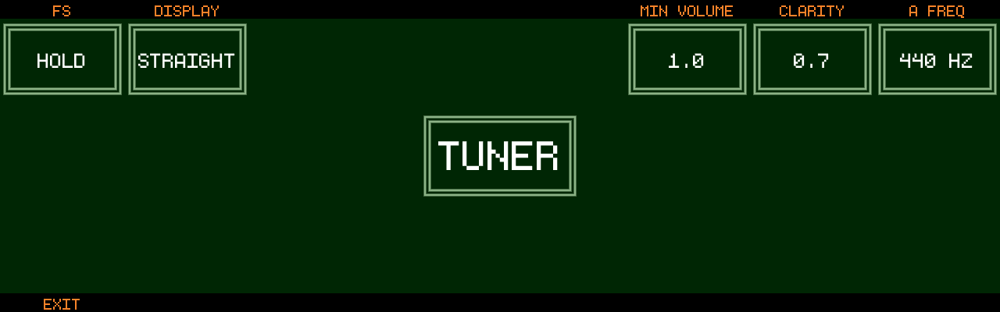
- FS — HOLD / TOGGLE: how the footswitch activates the tuner (with FOOTSWITCH set to TUNER in Settings)
- DISPLAY — STRAIGHT / CIRCLE
- MIN VOLUME — signal level gate below which the tuner reads silence
- CLARITY — pitch-detection sensitivity
- A FREQ — reference tuning of A in Hz
- Low, decaying notes track more reliably — improved compatibility with 5-string basses (new in v1.2.1-SNAPSHOT)
Threshold Recording (Track 3)
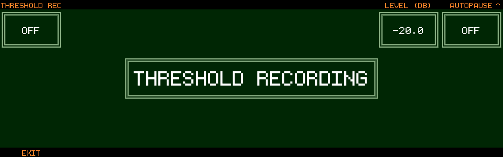
Start recording automatically when the input crosses a level.
- THRESHOLD REC (Encoder 1) — ON / OFF
- LEVEL (dB) (Encoder 7) — trigger level
- AUTOPAUSE (Encoder 8) — OFF or a number of silent seconds after which recording pauses; it resumes on the next signal (since v1.1.3)
- PAUSE ON (push Encoder 8) — OFF / BEAT / BAR: make the autopause always stop the playhead on a beat or bar (since v1.1.3)
- MIDI notes also trigger threshold recording — when you are in a MIDI view
or
A && Mrecording is enabled in the project settings (since v1.1.3)
MIDI (Track 4)
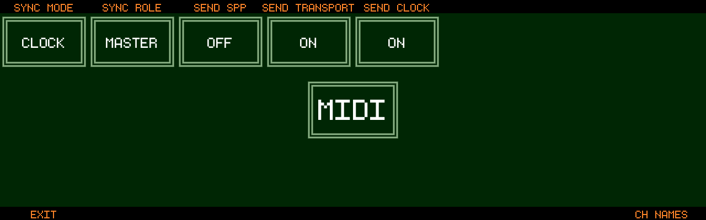
- SYNC MODE — CLOCK or MTC
- SYNC ROLE — MASTER or SLAVE
- As Clock master: SEND SPP / SEND TRANSPORT / SEND CLOCK
- As Clock slave: RECV SPP / RECV TRANSPORT / RECV CLOCK
- As MTC slave: MTC OFFSET (minutes/seconds)
- With MTC: FRAME RATE — 24 / 25 / 29.97 / 30 fps
- DEVICE and CONTROL — flag a MIDI device for remote control and edit control mappings, see MIDI Remote Control (since v1.1.4)
- CH NAMES — name your MIDI channels and bind a MIDI Device Profile per channel (Encoder 1 picks the row, Encoder 8 the profile; since v1.2.1-SNAPSHOT)
Tape (Track 5)
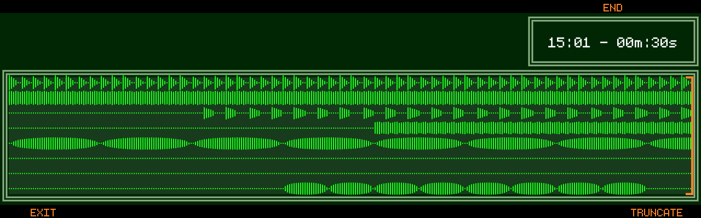
Shows all 8 tracks of the current project’s tape.
- END (Encoder 7/8) — move the end point in whole bars
- TRUNCATE (Track 8) — cut the project to the end point, after a confirmation. This shortens the tape files on disk and cannot be undone
Audio (Track 6)
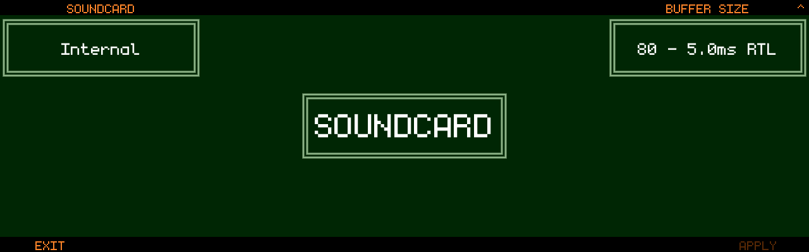
The soundcard setup — internal converters or a class-compliant USB interface. See External Audio for details.
- SOUNDCARD — Internal or a connected USB interface
- BUFFER SIZE / PERIODS — buffer size, and 3–5 audio periods for external interfaces (PERIODS new in v1.2.1-SNAPSHOT); the resulting round-trip latency is shown
- RATE — 48k / 44.1k: last-resort compatibility mode for interfaces that cannot run at 48 kHz; audio is resampled and quality/performance suffer (since v1.1.1)
- MODE — SINGLE / MULTI track input mode
- Sub-pages: TRK IN (or CH 1/2), INSERTS, SENDS, EXTERNAL, MAIN OUT, IO NAMES — on MAIN OUT an ALT METRON channel can be selected to route the metronome to its own output instead of the main mix (new in v1.2.1-SNAPSHOT)
- APPLY (Track 8) — apply pending soundcard changes
Debug (Track 8)
- Shows the installed Track8 firmware version (since v1.1.3)
- REBUILD WAVEFORM — throw away the stored waveform overview of the current project and re-read it from the tape. Use this if the drawn waveform no longer matches the audio (new in v1.2.1-SNAPSHOT)
- SHOW FPS / SHOW LATENCY / SHOW MEMORY — on-screen performance overlays
- DEBUG LOG — verbose logging
- LOGS → USB — copy the device logs to a USB stick for a support request
Updates
Checking your Version
The installed firmware version is shown under UTILITY → DEBUG (since v1.1.3). Open Settings, press UTILITY, then DEBUG.
Access Internal SSD
- Connect via USB-C → USB-A
- Device mounts as drive
- Access:
- projects/
- audio/
- midi/
Updating Track8
- Download latest release: https://github.com/ThingstoneGmbH/Track8/releases
- Copy new binary into
/bin - Eject the
TRACK8drive
After updating, the first load of each project may take a little longer while the waveform overview is rebuilt (since v1.2.1-SNAPSHOT projects then load faster).
Troubleshooting
No Sound
- Check mute
- Check monitoring (
AUDIO MONin Settings, Encoder 8)
No Input
- Check input selection
- Check gain
Clipping
- Reduce track or master volume
Recording stopped when switching screens
- Some screens (USB Browser, Utility sub-screens) cannot stay open during a take. Since v1.2.1-SNAPSHOT such actions are refused with an on-screen error while recording — the red border around the screen shows that a take is rolling.
Waveform does not match the audio
- Use REBUILD WAVEFORM under UTILITY → DEBUG to re-read the waveform overview from the tape (new in v1.2.1-SNAPSHOT).
Reporting a problem
- Your firmware version is shown under UTILITY → DEBUG (since v1.1.3)
- LOGS → USB on the same screen copies the device logs to a USB stick — attach them to your report
Support
- Email: info@thingstone.com
- GitHub Issues: https://github.com/ThingstoneGmbH/Track8
🎛️ Track8 Feature Design Principles
Track8 is a recording instrument. Track8 does not try to be a DAW.
These principles guide how new features are evaluated and implemented.
⚡ Core Idea
Track8 should feel:
- Immediate – no waiting, no friction
- Obvious – works without reading a manual
- Fast – supports creative flow without interruption
- Intentional – advanced features require deliberate action
If a feature compromises any of these, it likely doesn’t belong in its current form.
🧱 Two Layers of Interaction
Track8 separates functionality into two clear layers:
Primary (Core)
- Instant
- Physical (buttons, encoders)
- Always available
- Used constantly during usage
Secondary (Expert)
- Accessed intentionally (e.g. touch interaction)
- Slightly slower by design
- Contextual
- Cannot be triggered accidentally
The primary layer must never be compromised by adding complexity.
⚡ Core Actions
Core actions must be:
- Single-step
- Immediate
- Predictable
Examples
- Recording
- Playback
- Marker placement
- Basic editing
No menus. No hidden states. No delays.
A user with basic recording experience should be able to use Track8 without instructions.
🧠 Expert Features
Advanced functionality is welcome — but must follow strict rules:
- Discoverable (users can find it)
- Intentional (requires a deliberate action)
- Non-disruptive (does not interfere with core workflow)
Trade-off:
It is acceptable for expert features to be slower if it prevents accidental use.
Typical characteristics
- Touch interaction
- Secondary screens
- No direct hardware shortcut (in most cases)
📍 Example: Marker System
Markers demonstrate this design clearly.
Core
- Dedicated Marker button
- Sets / removes markers instantly
- Defines regions for editing
Fast, simple, always available.
Expert
- Name marker
- Lock marker (prevent deletion)
- Colour-code marker
Access
- Touch the marker → opens keyboard + lock toggle
Why
- No accidental renaming or locking
- No additional button combinations
- Clear separation between fast actions and advanced control
🚫 What to Avoid
When proposing features, avoid:
- Menu-driven workflows for core tasks
- Multi-step interactions for simple actions
- Hidden modes or unclear states
- Overloading buttons with multiple meanings
- Features that interrupt recording flow
- “DAW-like” complexity in the primary layer
✅ What Makes a Good Feature
A feature fits Track8 if it:
- Feels obvious to use
- Is fast in common scenarios
- Keeps the core workflow uninterrupted
- Places complexity in the secondary layer
- Requires intent for advanced actions
🧩 Guiding Question
When evaluating a feature, ask:
Does this make Track8 faster and more intuitive — or more complex?
If it adds complexity, it must justify itself by staying out of the core workflow.
🎯 Goal
Track8 is designed to:
Capture ideas quickly, without breaking creative flow.
Every feature should reinforce that.
Safety & Compliance
Power
- USB-C PD required
- 9V ≥ 20W
Usage
- Avoid high volume exposure
- Keep away from liquids
- Avoid extreme temperatures
Certifications
- CE
- FCC (Part 15 Class B)
- ICES-003
FCC Note
Use compliant USB-C power supplies to avoid emissions issues.